第2章 化学基础
译自 Molecular Cell Biology, 第8版 · Lodish et al. · Chemical Foundations · 保留全部图表（点击图片可放大）
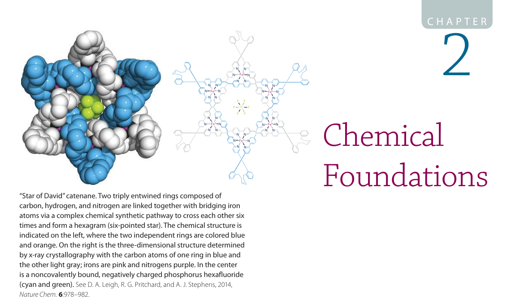
细胞的生存依赖于数千种在时间和空间上精妙协调的化学相互作用与反应，并受细胞遗传指令及其环境的影响。通过在分子水平上理解这些相互作用与反应，我们就能开始回答关于细胞生命的一些基本问题：细胞如何从环境中摄取营养物与信息？细胞如何将储存在营养物中的能量转化为运动或代谢的功？细胞如何将营养物转化为其生存所需的细胞组分？细胞如何与其他细胞相连形成组织？细胞之间又如何通讯，使一个复杂而高效运作的生物体得以发育
和繁衍？《分子细胞生物学》的目标之一，就是用单个分子与离子的性质来回答这些以及其他关于细胞与生物体结构与功能的问题。
例如，水这一分子的性质控制着所有细胞的演化、结构和功能。若不理解水的性质如何主宰生命的化学，就无法理解生物学。生命最早起源于水环境。水占大多数细胞重量的 70%–80%，是生物系统中含量最丰富的分子。正是在这一水性介质中，占生命物质重量约 7% 的小分子和离子结合成
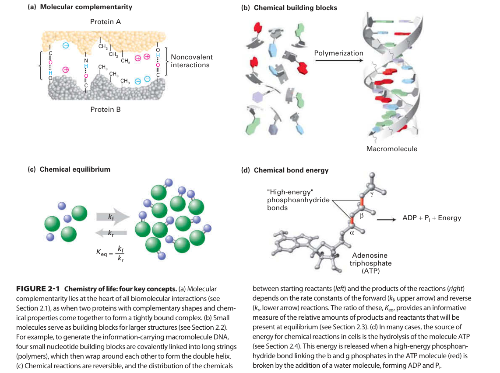
| molecular complementarity | 分子互补性 |
| biomolecular interactions | 生物分子相互作用 |
| building blocks | 构建块 |
| macromolecule | 大分子 |
| nucleotide | 核苷酸 |
| covalently linked | 共价连接 |
| polymers | 聚合物 |
| double helix | 双螺旋 |
| chemical equilibrium | 化学平衡 |
| reactants | 反应物 |
| products | 产物 |
| rate constants | 速率常数 |
| forward reaction | 正向反应 |
| reverse reaction | 逆向反应 |
| Keq | 平衡常数Keq |
| hydrolysis | 水解 |
| ATP | ATP（腺苷三磷酸） |
| phosphoanhydride bond | 磷酸酐键 |
| β phosphate | β磷酸 |
| γ phosphate | γ磷酸 |
| ADP | ADP（腺苷二磷酸） |
| Pi | Pi（无机磷酸） |
构成细胞机器与建筑结构、从而构成生物体其余质量的较大大分子和大分子组装体。这些小分子包括氨基酸（蛋白质的构建块）、核苷酸（DNA 和 RNA 的构建块）、脂质（生物膜的构建块）和糖（复杂碳水化合物的构建块）。
细胞的许多生物分子（如糖）易溶于水，这类分子被称为亲水的（"喜水"）。另一些（如胆固醇）是油性、脂肪样物质，疏远水，被称为疏水的（"怕水"）。还有一些生物分子（如磷脂）既含亲水区又含疏水区，被称为两亲性或双亲性（"兼喜"）。细胞、组织和生物体的顺畅运转有赖于从最小到最大的所有这些分子。事实上，简单质子（H⁺）的化学对于人细胞的生存，其重要性可能不亚于每个巨大的 DNA 分子（人 1 号染色体 DNA 分子的质量是质子的 8.6 × 10¹⁰ 倍！）。所有这些大大小小的分子与水以及彼此之间的化学相互作用，定义了生命的本质。
幸运的是，尽管许多类型的生物分子在众多复杂通路中相互作用与反应以形成有功能的细胞和生物体，但理解分子水平的细胞过程只需相对少数的化学原理（图 2-1）。本章我们回顾这些关键原理，其中一些你已熟知。我们从将原子连接成分子的共价键、以及稳定分子内和分子间原子基团的非共价相互作用开始。然后考察大分子和大分子组装体的基本化学构建块。在回顾与生物系统最相关的化学平衡方面之后，本章以生化能学的基本原理结尾，包括 ATP（腺苷三磷酸）在细胞代谢中捕获和转移能量的核心作用。
2.1 共价键与非共价相互作用
原子之间的强吸引力与弱吸引力是将单个分子维系在一起、并允许不同分子间相互作用的"胶水"。当两个原子共享一对电子时，形成共价键--一种将原子维系在分子中的强作用力。共享多对电子则形成多重共价键（如"双键"或"三键"）。非共价相互作用的弱吸引力在决定蛋白质、核酸、碳水化合物和脂质等生物分子的性质和功能方面同样重要。本节首先回顾共价键，然后讨论四大类非共价相互作用：离子键、氢键、范德华相互作用和疏水效应。
原子的电子结构决定其能形成共价键的数目和几何
氢、氧、碳、氮、磷和硫是生物分子中最丰富的元素。这些原子很少以孤立实体存在，而是利用其核周围最外层电子轨道中的电子轻易形成共价键（图 2-2）。一般来说，每种原子与其他原子形成特征数目的共价键。这些键具有由原子大小、核周围电子分布及可共享电子数共同决定的明确几何。在某些情况下，原子能形成的稳定共价键数目是固定的；例如碳总是形成四个共价键。在其他情况下，可形成不同数目的稳定共价键；例如硫可形成两个、四个或六个稳定共价键。
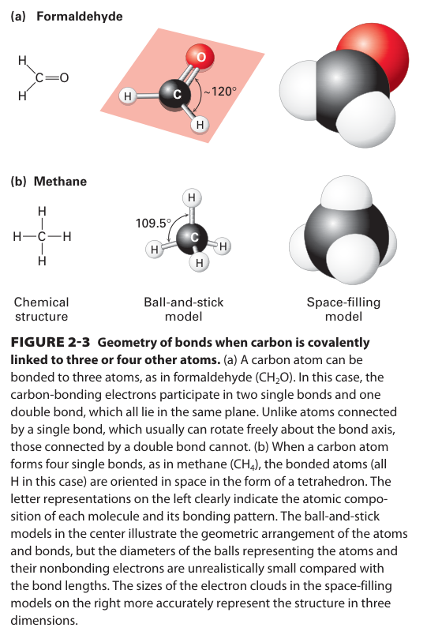
| formaldehyde | 甲醛 |
| methane | 甲烷 |
| covalent bonds | 共价键 |
| double bond | 双键 |
| single bond | 单键 |
| tetrahedron | 四面体 |
| ball-and-stick model | 球棍模型 |
| space-filling model | 空间填充模型 |
| electron clouds | 电子云 |
| bond axis | 键轴 |
| nonbonding electrons | 非键合电子 |
| atomic composition | 原子组成 |
所有生物构建块都以碳原子为中心组织，碳形成四个共价键。在这些
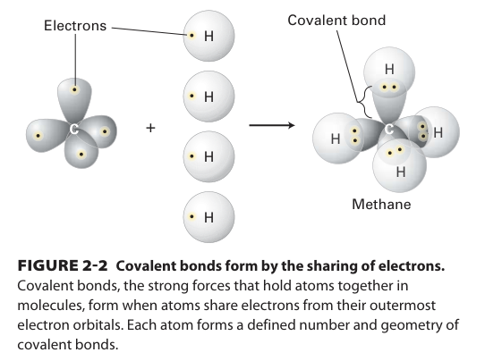
| covalent bond | 共价键 |
| electrons | 电子 |
| methane | 甲烷 |
| outermost electron orbitals | 最外层电子轨道 |
有机生物分子中，每个碳通常与三个或四个其他原子键合。[碳也可与两个其他原子键合，如线性分子二氧化碳 CO₂，它有两个碳-氧双键（O=C=O）；然而碳的这种键排列不见于生物构建块。] 如图 2-3a（甲醛）所示，碳可与三个原子键合，且都在同一平面内。碳原子与两个原子形成两个单键，与第三个原子形成一个双键（两对共享电子）。在无其他约束时，单键连接的原子通常可绕键轴自由旋转，而双键连接的原子不能。双键施加的刚性平面性对磷脂、蛋白质和核酸等生物分子的形状和柔性具有巨大意义。
碳还可与四个而非三个原子键合。如甲烷（CH₄）所示，当碳与四个其他原子键合时，任两键之间的夹角为 109.5°，键合原子的位置定义四面体的四个顶点（图 2-3b）。这种几何决定了许多生物分子的结构。与四个不同原子或基团键合的碳（或任何其他）原子在非平面
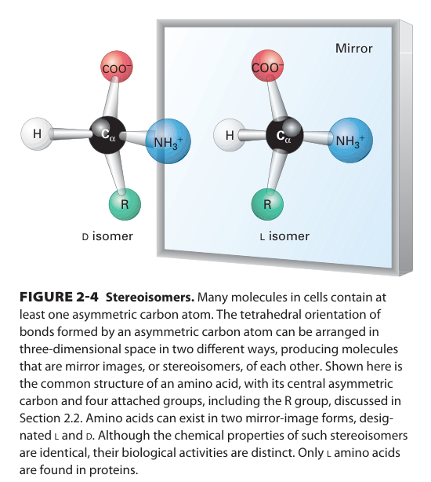
| stereoisomers | 立体异构体 |
| asymmetric carbon atom | 不对称碳原子 |
| tetrahedral orientation | 四面体取向 |
| mirror images | 镜像 |
| amino acid | 氨基酸 |
| R group | R基团 |
| L isomer | L异构体 |
| D isomer | D异构体 |
| biological activities | 生物活性 |
构型中被称为不对称原子。由不对称碳原子形成的键的四面体取向可在三维空间中以两种不同方式排列，产生互为镜像的分子，这一性质称为手性（"handedness"，源自希腊语 cheir，意为"手"）（图 2-4）。此类分子称为旋光异构体或立体异构体。细胞中的许多分子含至少一个不对称碳原子，常称为手性碳原子。一分子的不同立体异构体通常具有完全不同的生物活性，因为其结构内原子的排列、因而与其他分子相互作用的能力不同。
一些药物是小分子立体异构体的混合物，其中只有一种立体异构体具有所关注的生物活性。用该化学物质的纯单一立体异构体代替混合物，可能产生效力更强、副作用更小的药物。例如，抗抑郁药西酞普兰（Celexa）的一种立体异构体比另一种强 170 倍。一些立体异构体活性迥异：Darvon 是止痛药，而其立体异构体 Novrad（Darvon 倒拼）是镇咳药。氯胺酮的一种立体异构体是麻醉剂，另一种则引起幻觉。■
生物分子中常见其他原子形成的共价键的典型数目见表 2-1。氢原子只形成一个共价键。氧原子通常只形成两个共价键，但有两个额外的电子对可参与
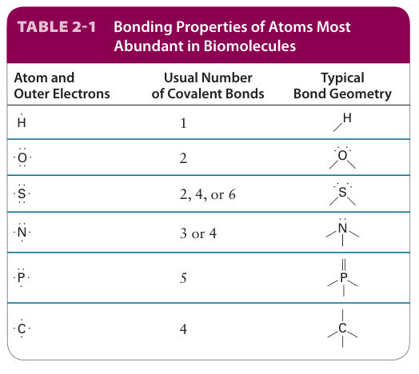
| covalent bonds | 共价键 |
| bond geometry | 键几何 |
| outer electrons | 外层电子 |
| biomolecules | 生物分子 |
非共价相互作用。硫在硫化氢（H₂S）中形成两个共价键，但可容纳六个共价键，如硫酸（H₂SO₄）及其硫酸衍生物。氮和磷各有五个可共享电子。在氨（NH₃）中，氮原子形成三个共价键；原子周围未参与共价键的电子对可参与非共价相互作用。在铵离子（NH₄⁺）中，氮形成四个共价键，呈四面体几何。磷通常形成五个共价键，如磷酸（H₃PO₄）及其磷酸衍生物，它们构成核酸骨架。共价附着于蛋白质的磷酸基团在调节许多蛋白质活性中起关键作用，而细胞能学的中心分子 ATP 含三个磷酸基团（见 2.4 节）。常见共价连接和官能团的总结见表 2-2，它们赋予所在分子独特的化学性质。
共价键中电子可均等或不均等共享
原子吸引电子的能力称为电负性。在电负性相同或相近的原子间的键中，成键电子基本在两原子间均等共享，如大多数碳-碳单键（C−C）和碳-氢单键（C−H）。此类键称为非极性键。然而在许多分子中，键合原子的电负性不同，导致电子不均等共享，它们之间的键称为极性键。
极性键的一端带部分负电荷（δ−），另一端带部分正电荷（δ+）。例如在 O−H 键中，氧原子相对氢原子的较大电负性使电子在氧原子周围停留的时间比在氢周围长。因此 O−H 键具有
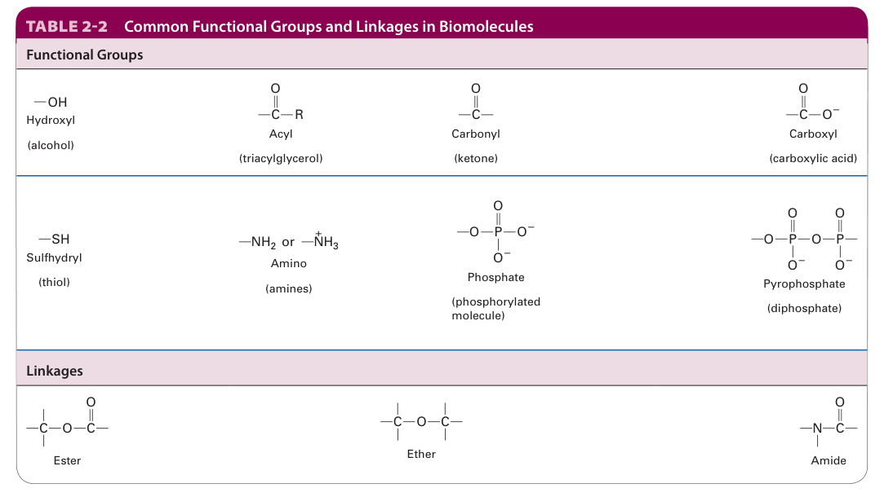
| functional groups | 官能团 |
| hydroxyl | 羟基 |
| acyl | 酰基 |
| triacylglycerol | 三酰甘油 |
| carbonyl | 羰基 |
| ketone | 酮 |
| carboxyl | 羧基 |
| carboxylic acid | 羧酸 |
| sulfhydryl | 巯基 |
| thiol | 硫醇 |
| amino | 氨基 |
| amines | 胺 |
| phosphate | 磷酸 |
| phosphorylated molecule | 磷酸化分子 |
| pyrophosphate | 焦磷酸 |
| diphosphate | 二磷酸 |
| ester | 酯 |
| ether | 醚 |
| amide | 酰胺 |
| linkages | 连接键 |
电偶极，即正电荷与等量相反的负电荷分离。O−H 偶极氧原子上的 δ− 电荷约为一个电子的 25%，氢原子上有等量相反的 δ+ 电荷。衡量电荷分离程度或偶极强度的常用定量指标称为偶极矩 μ，对于一个化学键，它等于每个原子上的部分电荷与两原子间距离的乘积。对于含多个偶极的分子，整个分子的电荷分离程度部分取决于其所有单个化学键的偶极矩，部分取决于分子的几何（各偶极矩的相对取向）。
以水（H₂O）为例，它有两个 O−H 键，因而有两个单键偶极矩。如果水是线性分子，两个键在氧原子正对的两侧，则分子两端的两个偶极强度相同但方向相反，会相互抵消，整个分子的偶极矩为零。然而，由于水是 V 形分子，两个 O−H 键的单个偶极都指向氧，水分子的一端（含氧原子的一端）带部分负电荷，另一端（含两个氢原子的一端）带部分正电荷。因此，整个分子是一个具有明确偶极矩的偶极（图 2-5）。该偶极矩以及氧和氢原子的电子性质使水能与其他
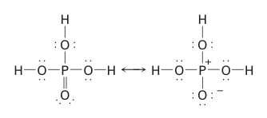
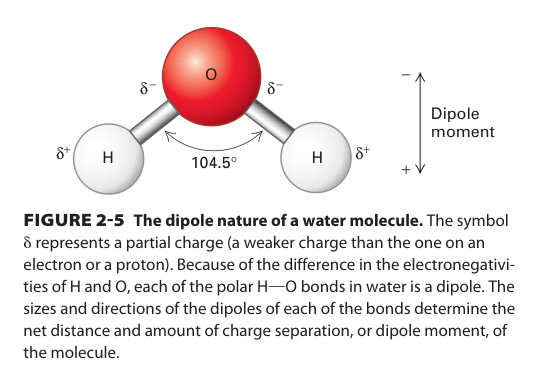
| dipole | 偶极 |
| partial charge | 部分电荷 |
| electronegativity | 电负性 |
| polar bond | 极性键 |
| dipole moment | 偶极矩 |
| charge separation | 电荷分离 |
水分子及其他类型分子形成静电的、非共价相互作用。这些相互作用在细胞和生物体几乎每一个生化相互作用中都起关键作用，我们将很快看到。
极性的另一个重要例子是 H₃PO₄ 中的 O=P 双键。在左侧 H₃PO₄ 的结构中，线代表单键和双键，非键合电子以成对的点表示（每个点代表一个电子）：
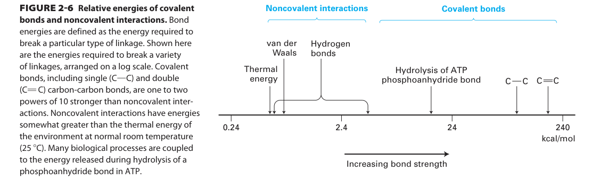
| bond energies | 键能 |
| covalent bonds | 共价键 |
| noncovalent interactions | 非共价相互作用 |
| thermal energy | 热能 |
| hydrogen bonds | 氢键 |
| van der Waals | 范德华 |
| phosphoanhydride bond | 磷酸酐键 |
| hydrolysis | 水解 |
| log scale | 对数刻度 |
由于 O=P 双键的极性，H₃PO₄ 也可用右侧结构表示，其中 P=O 双键的一个电子积累在 O 原子周围，使其带负电，P 原子带正电。这些电荷在非共价相互作用中很重要。这两种模型都不能精确描述 H₃PO₄ 的电子状态。实际结构可视为这两种表示之间的中间体或杂化体，由它们之间的双头箭头指示。此类中间结构称为共振杂化体。
共价键比非共价相互作用强得多且更稳定
共价键被认为是强键，因为断裂它们所需的能量远大于室温（25 °C）或体温（37 °C）下可用的热能，因此它们在这些温度下稳定。例如，25 °C 下可用热能约 0.6 千卡每摩尔（kcal/mol），而断裂乙烷中 C−C 键所需能量约是其 140 倍（图 2-6）。因此，在室温（25 °C）下，不到 10¹² 分之一的乙烷分子断裂成一对 ·CH₃ 分子，每个含一个未配对的非键合电子（称为自由基）。
生物分子中的共价单键能量与乙烷中 C−C 键相似。由于双键中更多电子被共享，断裂双键需更多能量。例如，断裂一个 C−O 单键需 84 kcal/mol，而断裂 C=O 双键需 170 kcal/mol。生物分子中最常见的双键是 C=O、C=N、C=C 和 P=O。
相比之下，断裂非共价相互作用所需能量仅 1–5 kcal/mol，远小于共价键的键能（见图 2-6）。事实上，非共价相互作用弱到在室温下不断形成和断裂。尽管这些相互作用弱且在生理温度（25–37 °C）下短暂存在，但多个非共价相互作用可协同作用，在大分子的不同部分之间或不同大分子之间产生高度稳定和特异的结合。蛋白质-蛋白质和蛋白质-核酸相互作用就是此类非共价相互作用的典型例子。下面我们回顾非共价相互作用的四种主要类型，然后考察它们在生物分子彼此结合及与其他分子结合中的作用。
离子相互作用是带相反电荷离子间的吸引
离子相互作用源于带正电离子（阳离子）与带负电离子（阴离子）之间的吸引。例如在氯化钠（NaCl）中，钠原子贡献的成键电子完全转移到氯原子（图 2-7a）。与共价键不同，离子相互作用没有固定或特定的几何取向，因为离子周围的静电场--其对相反电荷的吸引--在所有方向上均匀。在固态 NaCl 中，带相反电荷的离子以交替模式紧密堆叠，形成高度有序的晶格，这是盐晶体的典型特征（图 2-7b）。断裂离子相互作用所需能量取决于离子间距离和离子环境的电学性质。
当固态盐溶于水时，离子彼此分离并被与水分子的相互作用稳定。在水溶液中，具有生物学意义的简单离子（如 Na⁺、K⁺、Ca²⁺、Mg²⁺ 和 Cl⁻）被水合，被一层稳定的水分子壳包围，水分子壳由中心离子与水分子偶极的相反电荷端之间的离子相互作用维系（图 2-7c）。大多数离子化合物易溶于水，因为水合能--离子紧密结合水分子并在水溶液中分散时释放的能量--大于稳定晶体结构的晶格能。当离子与蛋白质直接相互作用时，必须去除溶液中离子水合壳的部分或全部。例如，
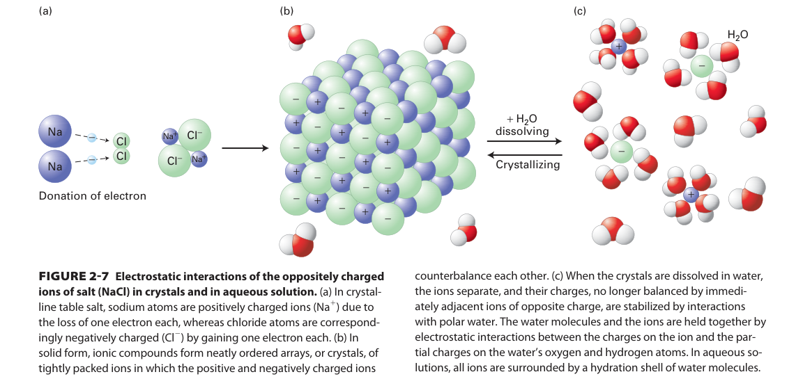
| electrostatic interactions | 静电相互作用 |
| ions | 离子 |
| Na+ | Na⁺（钠离子） |
| Cl- | Cl⁻（氯离子） |
| crystals | 晶体 |
| aqueous solution | 水溶液 |
| hydration shell | 水合壳 |
| polar water | 极性水 |
| partial charges | 部分电荷 |
| ionic compounds | 离子化合物 |
在神经传导中离子穿过细胞膜蛋白孔时失去水合水。
两个带相反电荷离子 A⁻ 和 C⁺ 之间相互作用的相对强度取决于溶液中其他离子的浓度。其他离子（如 Na⁺ 和 Cl⁻）浓度越高，A⁻ 和 C⁺ 与这些其他离子发生离子相互作用的机会越多，因而断裂 A⁻ 与 C⁺ 之间相互作用所需能量越低。因此，增加生物分子溶液中 NaCl 等盐的浓度可削弱甚至破坏维系生物分子的离子相互作用。这一原理可被利用来将蛋白质等相互作用分子的复杂混合物分离成各自的纯组分。
氢键是决定不带电分子水溶性的非共价相互作用
氢键是偶极（如水）中带部分正电荷的氢原子与同一或不同分子中另一原子的未配对电子之间的相互作用。通常，氢原子只与一个其他原子形成共价键。然而，与电负性供体原子 D 共价键合的氢原子可与受体原子 A 形成额外的弱结合--氢键，受体原子必须有可用于该相互作用的非键合电子对：
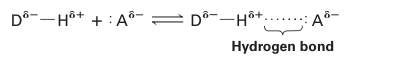
共价 D−H 键的长度比没有氢键时略长，因为受体将氢从供体"拉"开。所有氢键的一个重要特征是方向性。在最强氢键中，供体原子、氢原子和受体原子都在一条直线上。非线性氢键比线性弱；但多个非线性氢键有助于稳定许多蛋白质的三维结构。
氢键比相同原子间的共价键更长且更弱。例如在水中，相邻氢键水分子的氢和氧原子核间距离约 0.27 nm，约为单个水分子内共价 O−H 键长的两倍（图 2-8a）。水分子间氢键（约 5 kcal/mol）比共价 O−H 键（约 110 kcal/mol）弱得多，尽管它比生物分子中许多其他氢键（1–2 kcal/mol）强。水分子间广泛的分子间氢键解释了水的许多关键性质，包括异常高的熔点和沸点以及溶解许多其他分子的能力。
不带电物质在水环境中的溶解度很大程度上取决于其与水形成氢键的能力。例如，醇（−CH₂OH）中的羟基（−OH）和胺（−CH₂NH₂）中的氨基（−NH₂）能与水形成多个氢键，使这些分子能高浓度溶于水（图 2-8b）。一般来说，具有易与水形成氢键的极性键的分子，以及与水偶极相互作用的带电分子和离子
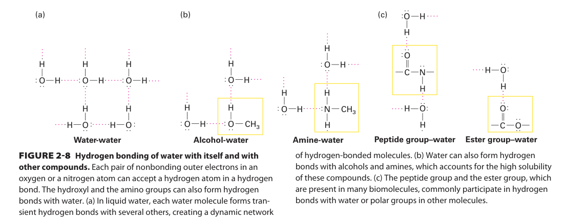
| hydrogen bond | 氢键 |
| nonbonding outer electrons | 非键合外层电子 |
| hydroxyl group | 羟基 |
| amino group | 氨基 |
| alcohols | 醇 |
| amines | 胺 |
| solubility | 溶解度 |
| peptide group | 肽键基团 |
| ester group | 酯键基团 |
| biomolecules | 生物分子 |
| polar groups | 极性基团 |
都易溶于水，即亲水。许多生物分子除羟基和氨基外，还含肽键和酯键，它们通过羰基氧上原本非键合的电子与水形成氢键（图 2-8c）。X 射线晶体学结合计算分析可准确描绘能参与氢键的原子最外层未键合电子以及共价键中电子的分布，如图 2-9 所示。
范德华相互作用是由瞬时偶极引起的弱吸引力
当任意两个原子彼此接近时，它们产生一种弱的、非特异的吸引力，称为范德华相互作用。这些非特异相互作用源于
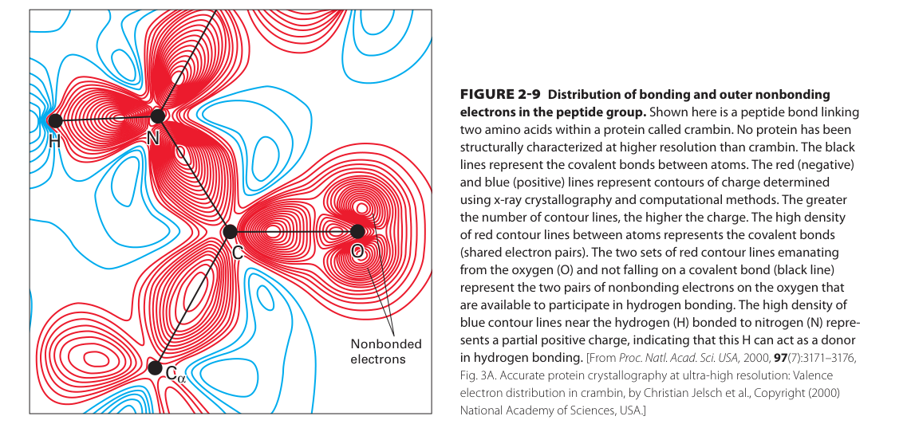
| peptide bond | 肽键 |
| amino acids | 氨基酸 |
| protein | 蛋白质 |
| crambin | crambin（蛋白质） |
| covalent bonds | 共价键 |
| x-ray crystallography | X射线晶体学 |
| computational methods | 计算方法 |
| contours of charge | 电荷等高线 |
| shared electron pairs | 共享电子对 |
| nonbonding electrons | 非键合电子 |
| hydrogen bonding | 氢键形成 |
| partial positive charge | 部分正电荷 |
| donor | 供体 |
任何原子电子分布的瞬时随机涨落，造成电子瞬时不均等分布。如果两个非共价键合原子足够接近，一个原子的电子会扰动另一个的电子。这种扰动在第二个原子中产生瞬时偶极，两个偶极微弱相互吸引（图 2-10）。类似地，一个分子中的极性共价键吸引另一个分子中反向取向的偶极。
范德华相互作用（涉及瞬时或永久偶极）发生于所有类型分子中，极性和非极性皆有。特别是，范德华相互作用是庚烷 CH₃−(CH₂)₅−CH₃ 等不能彼此形成氢键或离子相互作用的非极性分子间内聚的原因。范德华相互作用的强度随距离增加而迅速减弱；因此这些非共价相互作用
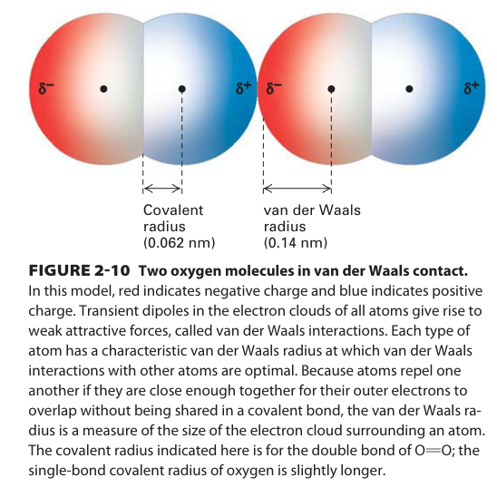
| van der Waals contact | 范德华接触 |
| van der Waals radius | 范德华半径 |
| covalent radius | 共价半径 |
| transient dipoles | 瞬时偶极 |
| electron clouds | 电子云 |
| van der Waals interactions | 范德华相互作用 |
| double bond | 双键 |
| single-bond covalent radius | 单键共价半径 |
只有在原子彼此相当接近时才能形成。然而，如果原子靠得太近，其电子的负电荷会产生排斥力。当两原子间的范德华吸引恰好平衡其两电子云间的排斥时，称原子处于范德华接触。范德华相互作用的强度约 1 kcal/mol，比典型氢键弱，其能量仅略高于 25 °C 下分子的平均热能。因此，需要多个范德华相互作用、范德华与其他非共价相互作用一起，或两者兼有，才能形成范德华介导的分子内和分子间稳定吸引。
疏水效应使非极性分子彼此黏附
由于非极性分子不含带电基团、不具有偶极矩、也不被水合，它们在水中不溶或几乎不溶，即疏水。两个碳原子间及碳氢原子间的共价键是生物系统中最常见的非极性键。烃--仅由碳和氢组成的分子--几乎不溶于水。构成动物脂肪和植物油的大型三酰甘油（也称甘油三酯）也基本不溶于水。如我们将见，这些分子的大部分由长烃链组成。在水中振荡后，三酰甘油形成单独的相。一个熟悉的例子是油醋沙拉酱中油与水性醋的分离。
非极性分子或分子的非极性部分由于称为疏水效应的现象而倾向于在水中聚集。由于水分子不能与非极性物质形成氢键，它们倾向于在非极性分子周围形成相对刚性的、氢键连接的五边形和六边形"笼"（图 2-11，左）。这种状态在能量上不利，因为它降低了水分子群体的熵或无序度。（熵在化学系统中的作用在 2.4 节讨论。）如果水环境中的非极性分子以疏水面彼此相对聚集，暴露于水的净疏水表面积减少（图 2-11，右）。因此，形成围绕非极性分子的笼所需的水减少，熵相对于未聚集状态增加，达到能量更有利的状态。从某种意义上说，水将非极性分子挤压成聚集体。与氢键中的吸引力不同，疏水效应源于避免不稳定状态--即围绕单个非极性分子的大量水笼。
非极性分子也可通过范德华相互作用结合，尽管较弱。疏水效应和范德华相互作用的净结果是疏水分子彼此相互作用的强烈倾向，而非与水相互作用。简言之，相似相溶。极性分子溶于水等极性溶剂；非极性分子溶于己烷等非极性溶剂。
一种著名的疏水分子是胆固醇（见 2.2 节的结构）。胆固醇、甘油三酯和其他难溶于水的分子称为脂质。与葡萄糖或
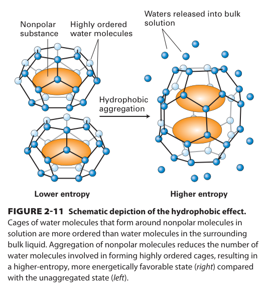
| hydrophobic effect | 疏水效应 |
| nonpolar substance | 非极性物质 |
| highly ordered water molecules | 高度有序水分子 |
| hydrophobic aggregation | 疏水聚集 |
| entropy | 熵 |
| bulk solution | 体相溶液 |
氨基酸等亲水分子不同，脂质不能轻易溶于血液--运输分子和细胞遍及全身的水性循环系统。因此，胆固醇等脂质必须被包装到特殊的亲水载体--脂蛋白--中，脂蛋白自身能溶于血液并遍及全身运输。每个脂蛋白的中心或核心可包装数百至数千个脂质分子。疏水核心被两亲性分子包围，其亲水部分与水相互作用，疏水部分彼此及与核心相互作用。脂质包装成脂蛋白（第 14 章讨论）使其在血液中高效运输，类似于通过货船、火车和卡车进行远距离高效运输的货物集装箱化。
高密度脂蛋白（HDL）和低密度脂蛋白（LDL）是两种这样的脂蛋白载体，分别与降低或增加心脏病相关，因此常被称为"好"胆固醇和"坏"胆固醇。实际上，HDL 和 LDL 携带的胆固醇分子及其衍生物基本相同，其本身既非"好"也非"坏"。然而，HDL 和 LDL 对细胞有不同影响，因此 LDL 促成而 HDL 似乎保护动脉堵塞（即动脉粥样硬化）及随之的心脏病和中风。因此 LDL 被称为"坏"胆固醇。■
非共价相互作用导致的分子互补性产生生物分子间的锁钥契合
在细胞内外，离子和分子不断碰撞。任意两类分子浓度越高，它们相遇的可能性越大。当两个分子相遇时，最可能只是弹开，因为结合它们的非共价相互作用弱且在生理温度下短暂存在。然而，表现出分子互补性--形状、电荷或其他物理性质间的锁钥式契合--的分子可在近距离形成多个非共价相互作用。当两个结构互补的分子相碰时，这些多重相互作用使它们粘附或结合。
图 2-12 展示了多个不同弱相互作用如何使两个假设蛋白质紧密结合。此类蛋白质-蛋白质分子互补的众多例子可见于全书（例如图 16-8、16-9、16-11）。几乎任何其他相同分子基团在两个表面上的排列都不允许分子如此紧密结合。蛋白质分子内区域间的此类分子互补使其折叠成独特的三维形状（见第 3 章）；它也将 DNA 的两条链维系在双螺旋中（见第 5 章）。类似相互作用是分子基团缔合成多分子组装体或复合物的基础，例如形成肌纤维、固体组织中细胞间的胶样结合以及众多其他细胞结构。帮助中和病原体的抗体（见第 23 章）也利用互补分子形状的类似原理与之结合。
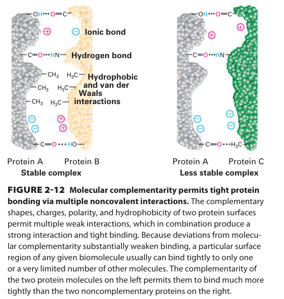
| molecular complementarity | 分子互补性 |
| noncovalent interactions | 非共价相互作用 |
| ionic bond | 离子键 |
| hydrogen bond | 氢键 |
| hydrophobic | 疏水 |
| van der Waals interactions | 范德华相互作用 |
| biomolecule | 生物分子 |
| polarity | 极性 |
两分子间非共价相互作用的数目和强度及环境决定其结合可紧密或松散，因而持久或短暂。两分子间亲和力越高，分子"契合"越好，可形成的非共价相互作用越多，结合越紧密。亲和力的重要定量度量是结合解离常数 Kd，在 2.3 节描述。需注意许多大生物分子并非坚硬刚性结构，而是可稍有可塑性。因此一个分子与另一个的结合有可能诱导其结合伙伴形状改变。当这种相互作用后分子互补性增加时，该过程称为诱导契合。
如第 3 章讨论，细胞中发生的几乎所有化学反应也依赖于酶的结合性质。这些蛋白质不仅加速（催化）反应，而且以高度特异性进行，这反映了它们仅与一个或少数相关分子紧密结合的能力。分子间相互作用和反应的特异性（依赖分子互补性）对许多生命关键过程至关重要。
第 2.1 节关键概念
共价键与非共价相互作用
● 亲水、疏水和两亲/双亲性这些术语分别指分子喜水、不能与水相互作用、具有两者特征或能容忍两者的倾向。亲水分子通常易溶于水，疏水分子在水中难溶或不溶。
● 共价键由两原子共享的电子对组成。共价键将分子的原子安排成特定几何。
● 细胞中的许多分子含至少一个不对称碳原子，与四个不同原子键合。此类分子可作为立体异构体（镜像）存在，记为 d 和 l（见图 2-4），具有不同生物活性。几乎所有氨基酸都是 l 异构体。
● 共价键中电子可均等或不均等共享。电负性不同的原子形成极性共价键，成键电子不均等分布。极性键一端带部分正电荷，另一端带部分负电荷（见图 2-5）。
● 共价键在生物系统中稳定，因为断裂它们所需能量（50–200 kcal/mol）远大于室温（25 °C）或体温（37 °C）下可用的热动能。
● 原子间非共价相互作用比共价键弱得多，能量约 1–5 kcal/mol（见图 2-6）。
● 生物系统中发生四类主要非共价相互作用：离子键、氢键、范德华相互作用和疏水效应引起的相互作用。
● 离子键源于离子正负电荷间的静电吸引。在水溶液中，所有阳离子和阴离子都被一层结合水分子壳包围（见图 2-7c）。增加溶液的盐（如 NaCl）浓度可削弱甚至破坏生物分子间的离子键。
● 在氢键中，与电负性原子共价键合的氢原子与受体原子结合，受体的非键合电子吸引氢（见图 2-8）。
● 弱且相对非特异的范德华相互作用源于所有分子相关的瞬时偶极间的吸引。两原子彼此接近时可形成（见图 2-10）。
● 在水环境中，非极性分子或较大分子的非极性部分被疏水效应驱到一起，从而减少与水分子的直接接触（见图 2-11）。
● 分子互补性是形状、电荷和其他物理性质互补的分子间的锁钥契合。互补分子间可形成多个非共价相互作用使其紧密结合（见图 2-12），非互补分子间则不能。
2.2 细胞的化学构建块
生物学的一个共同主题是由较小分子亚基构建大分子和大分子结构，这些亚基可视为构建块。这些亚基常常相似或相同。三大类生物大分子--蛋白质、核酸和多糖--都是由多个共价连接的小分子（单体）组成的多聚物（图 2-13）。蛋白质是含多达数千个由肽键连接的氨基酸的线性多聚物。核酸是含数百至数百万个由磷酸二酯键连接的核苷酸的线性多聚物。多糖是由糖苷键连接的单糖（如葡萄糖）的线性或分枝多聚物。
尽管单体间共价键形成的实际机制复杂（如我们将见），两个单体间共价键的形成通常涉及一个单体净失去一个氢（H）、另一个单体净失去一个羟基（OH）--即净失去一分子水--因此可视为脱水反应。聚合物中释放单体亚基的共价键断裂涉及逆反应，即加水，称为水解。连接单体的共价键在正常生物条件（如 37 °C、中性 pH）下通常稳定，因此这些生物聚合物稳定，能在细胞中执行多种功能，如储存信息、催化化学反应、作为定义细胞形状和运动的结构元件等。大分子结构也可由非共价相互作用组装。细胞膜的双层结构由数千个称为磷脂的小分子的非共价组装构建（见图 2-13）。
本章我们聚焦构成细胞的化学构建块--氨基酸、核苷酸、糖和磷脂。蛋白质、核酸、多糖和生物膜的结构、功能和组装在后续章节讨论。
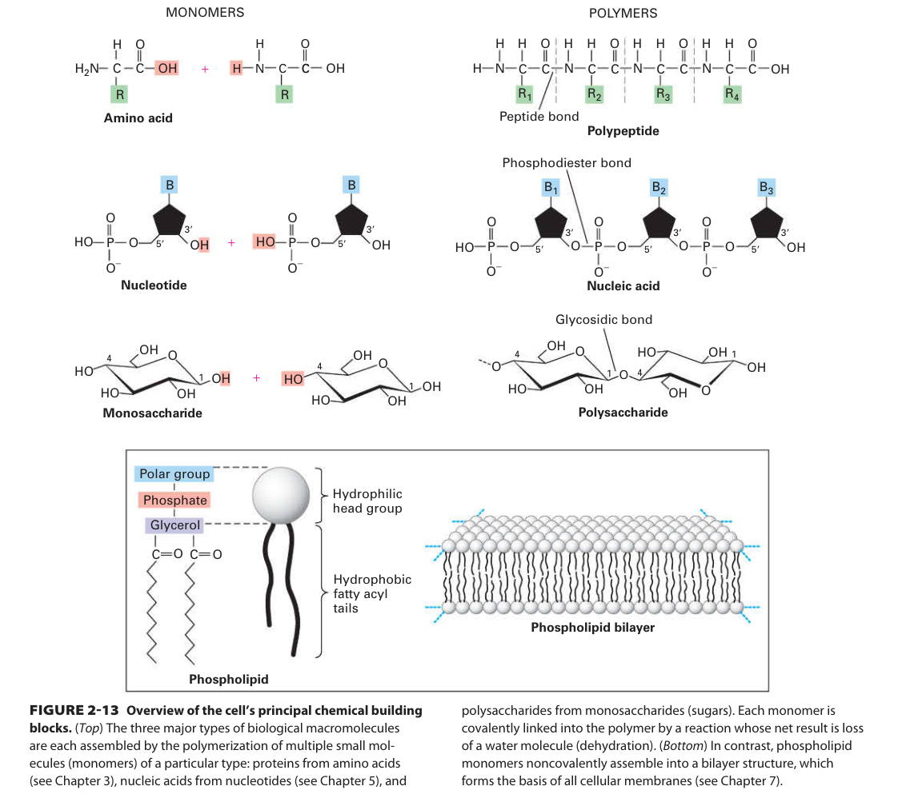
| monomers | 单体 |
| polymers | 聚合物 |
| amino acid | 氨基酸 |
| nucleotide | 核苷酸 |
| monosaccharide | 单糖 |
| phospholipid | 磷脂 |
| glycerol | 甘油 |
| phosphate | 磷酸 |
| polar group | 极性基团 |
| hydrophilic head group | 亲水头基 |
| hydrophobic fatty acyl tails | 疏水脂肪酰尾 |
| phospholipid bilayer | 磷脂双层 |
| polypeptide | 多肽 |
| peptide bond | 肽键 |
| polysaccharide | 多糖 |
| nucleic acid | 核酸 |
| phosphodiester bond | 磷酸二酯键 |
| glycosidic bond | 糖苷键 |
| polymerization | 聚合 |
| covalently linked | 共价连接 |
| dehydration | 脱水反应 |
| noncovalent assemble | 非共价组装 |
| bilayer | 双层 |
| cellular membranes | 细胞膜 |
| macromolecules | 大分子 |
| macromolecular assemblies | 大分子组装体 |
仅侧链不同的氨基酸组成蛋白质
蛋白质的单体构建块是 20 种氨基酸，当掺入蛋白质多聚物时常称为残基。所有氨基酸都有一个特征结构：中央 α 碳原子（Cα）与四个不同化学基团键合--氨基（−NH₂）、羧基或羧酸基（−COOH）（故称氨基酸）、氢原子（H）和一个可变基团（称为侧链或 R 基）。由于除甘氨酸外所有氨基酸的 α 碳都不对称，这些分子可以两种镜像形式存在，按惯例称为 d（右）和 l（左）异构体（见图 2-4）。两种异构体不能在不断裂并重新形成化学键的情况下相互转化。除罕见例外，蛋白质中只有 l 型氨基酸。但 d 型氨基酸常见于细菌细胞壁和其他微生物产物。
要理解蛋白质的三维结构和功能（第 3 章详述），你必须熟悉氨基酸的一些独特性质，这些性质部分由其侧链决定。你不必记忆每种侧链的详细结构
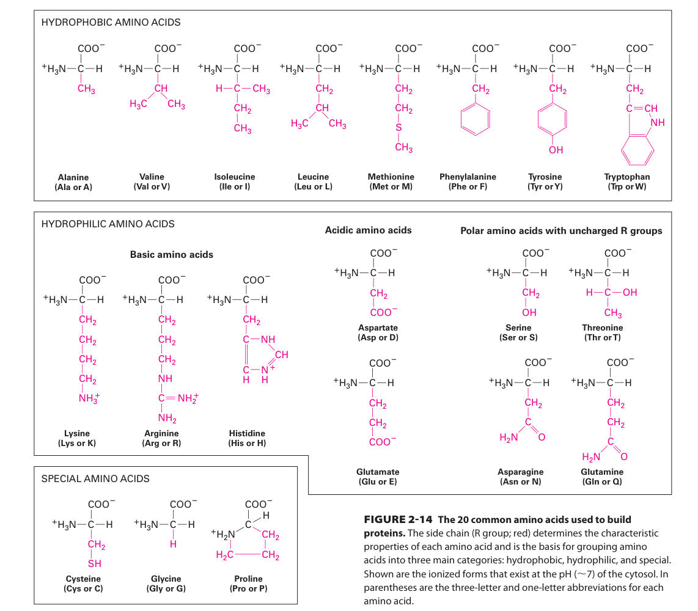
| amino acids | 氨基酸 |
| side chain | 侧链 |
| R group | R基团 |
| hydrophobic | 疏水 |
| hydrophilic | 亲水 |
| ionized forms | 离子化形式 |
| pH | pH |
| cytosol | 细胞质 |
| basic amino acids | 碱性氨基酸 |
| acidic amino acids | 酸性氨基酸 |
| polar amino acids | 极性氨基酸 |
| uncharged R groups | 不带电R基团 |
| Lysine | 赖氨酸 |
| Arginine | 精氨酸 |
| Histidine | 组氨酸 |
| Serine | 丝氨酸 |
| Threonine | 苏氨酸 |
| Asparagine | 天冬酰胺 |
| Glutamine | 谷氨酰胺 |
| Alanine | 丙氨酸 |
| Valine | 缬氨酸 |
| Leucine | 亮氨酸 |
| Isoleucine | 异亮氨酸 |
| Methionine | 甲硫氨酸 |
| Phenylalanine | 苯丙氨酸 |
| Tyrosine | 酪氨酸 |
| Tryptophan | 色氨酸 |
| Cysteine | 半胱氨酸 |
| Glycine | 甘氨酸 |
| Proline | 脯氨酸 |
| Aspartate | 天冬氨酸 |
| Glutamate | 谷氨酸 |
也能理解蛋白质如何工作，因为氨基酸可根据其侧链的大小、形状、电荷、疏水性（水溶性的度量）和化学反应性分为几大类（图 2-14）。
含非极性侧链的氨基酸称为疏水氨基酸，在水中难溶。非极性侧链越大，氨基酸越疏水。丙氨酸、缬氨酸、亮氨酸和异亮氨酸的侧链是不成环的线性或分枝烃，因此称为脂肪族氨基酸。这些氨基酸都是非极性的，甲硫氨酸也如此（除含一个硫原子外与它们相似）。苯丙氨酸、酪氨酸和色氨酸的侧链含大的疏水性芳香环。后续章节将详述疏水侧链在疏水效应影响下如何常堆叠到蛋白质内部或排列于镶嵌在生物膜疏水区域的蛋白质表面。
含极性侧链的氨基酸称为亲水氨基酸；最亲水的是侧链在细胞内外生物体液典型 pH（约 7）下带电荷（电离）的亚类（见 2.3 节）。精氨酸和赖氨酸有带正电的侧链，称为碱性氨基酸；天冬氨酸和谷氨酸由于侧链中的羧酸基而带负电（其带电形式称为天冬氨酸根和谷氨酸根），称为酸性氨基酸。第五种氨基酸组氨酸的侧链含一个带两个氮的环（称为咪唑），可根据环境酸度的微小变化从带正电转变为不带电：
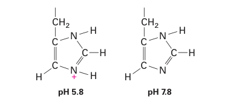
许多蛋白质的活性通过组氨酸侧链的质子化或去质子化受环境酸度（pH）变化调节。天冬酰胺和谷氨酰胺不带电但有含酰胺基的极性侧链，具有广泛的氢键能力。类似地，丝氨酸和苏氨酸不带电但有极性羟基，也参与与其他极性分子的氢键。
最后，半胱氨酸、甘氨酸和脯氨酸因其侧链的独特性质在蛋白质中发挥特殊作用。半胱氨酸的侧链含一个反应性巯基（−SH）。释放一个质子（H⁺）时，巯基转化为硫醇阴离子（S⁻）。硫醇阴离子在催化中起重要作用，特别是在某些破坏蛋白质的酶（蛋白酶）中。在蛋白质中，两个相邻巯基各自可被氧化（各释放一个质子和一个电子），形成共价二硫键（−S−S−）：
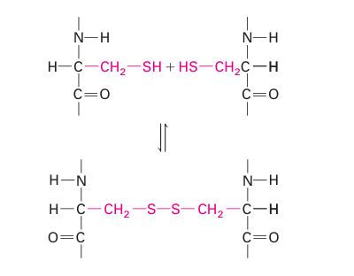
二硫键用于"交联"单个多肽链内的区域（分子内交联）或两条独立链之间（分子间交联）。二硫键稳定某些蛋白质的折叠结构。最小的氨基酸甘氨酸的 R 基是单个氢原子，其小尺寸使其能嵌入狭小空间。与其他常见氨基酸不同，脯氨酸的侧链弯曲形成环，共价键合到连接 Cα 的氨基中的氮原子。结果脯氨酸非常刚性，其氨基不能用于典型氢键。脯氨酸在蛋白质中的存在在多聚物链中造成固定弯折，限制其在脯氨酸残基附近的折叠方式。
某些氨基酸在蛋白质中比其他更丰富。半胱氨酸、色氨酸和甲硫氨酸不常见：三者合计约占典型蛋白质中氨基酸的 5%。四种氨基酸--亮氨酸、丝氨酸、赖氨酸和谷氨酸--是最丰富的，占典型蛋白质所有残基的 32%。但特定蛋白质的氨基酸组成可能与这些值差异很大。
人和其他哺乳动物能合成 20 种氨基酸中的 11 种。其余九种称为必需氨基酸，必须包含在饮食中以允许正常蛋白质生产。这些必需氨基酸是苯丙氨酸、缬氨酸、苏氨酸、色氨酸、异亮氨酸、甲硫氨酸、亮氨酸、赖氨酸和组氨酸。饲料中这些必需氨基酸的充分供给是畜牧业的关键。事实上，一种高赖氨酸含量的基因工程玉米品种现已用作促进动物生长的"强化"饲料。■
尽管细胞在蛋白质初始合成中使用图 2-14 所示的 20 种氨基酸，但细胞蛋白质分析显示它们含 100 多种不同氨基酸。差异源于某些氨基酸掺入蛋白质后通过添加多种化学基团的化学修饰（图 2-15）。一种重要修饰是向氨基酸添加乙酰基（CH₃CO），即乙酰化。另一种是向丝氨酸、苏氨酸和酪氨酸残基的羟基添加磷酸基（PO₄），即磷酸化。我们将遇到许多通过可逆磷酸化和去磷酸化调节活性的蛋白质。组氨酸侧链氮的磷酸化在细菌、真菌和植物中广为人知，但在哺乳动物中研究较少--可能因磷酸化组氨酸相对不稳定--且显然罕见。称为组蛋白的蛋白质上精氨酸和赖氨酸侧链的甲基化是真核生物基因表达的重要调节因子（见第 9 章）。与磷酸化和去磷酸化一样，受控的甲基化和去甲基化是重要的调节过程。天冬酰胺、丝氨酸和苏氨酸的侧链是糖基化位点（附着线性和分枝碳水化合物链）。许多分泌蛋白和膜蛋白含糖基化残基，特定丝氨酸和苏氨酸上羟基被 N-乙酰葡糖胺可逆修饰也调节蛋白质活性。其他见于特定蛋白质的氨基酸修饰包括胶原中脯氨酸和赖氨酸残基的羟基化（见第 19 章）、膜受体中组氨酸残基的甲基化，以及凝血因子（如凝血酶原）中谷氨酸的 γ-羧化。天冬酰胺和
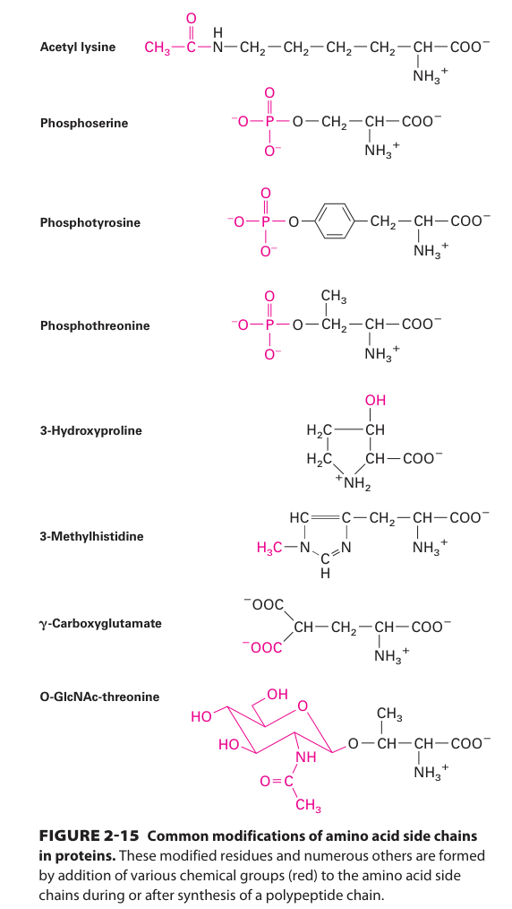
| modifications | 修饰 |
| amino acid side chains | 氨基酸侧链 |
| modified residues | 修饰残基 |
| polypeptide chain | 多肽链 |
| Phosphoserine | 磷酸丝氨酸 |
| Phosphotyrosine | 磷酸酪氨酸 |
| Phosphothreonine | 磷酸苏氨酸 |
| Acetyl lysine | 乙酰赖氨酸 |
| 3-Hydroxyproline | 3-羟脯氨酸 |
| 3-Methylhistidine | 3-甲基组氨酸 |
| γ-Carboxyglutamate | γ-羧基谷氨酸 |
| O-GlcNAc-threonine | O-GlcNAc-苏氨酸 |
谷氨酰胺脱氨形成相应酸性氨基酸（天冬氨酸根和谷氨酸根）也是常见现象。
N 端残基氨基的乙酰化是最常见的氨基酸化学修饰形式，影响约 80% 的蛋白质：
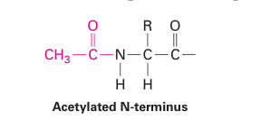
此修饰可能在控制细胞内蛋白质寿命方面起重要作用，因为许多非乙酰化蛋白质被迅速降解。
五种不同核苷酸用于构建核酸
两类化学上相似的核酸--DNA（脱氧核糖核酸）和 RNA（核糖核酸）--是细胞携带遗传信息的主要分子。构建 DNA 和 RNA 多聚物的单体称为核苷酸，都有共同结构：一个磷酸基通过磷酸酯键连接到戊糖（五碳糖），后者再连接到含氮和碳的环结构（常称为碱基）（图 2-16a）。RNA 中戊糖是核糖；DNA 中是脱氧核糖，其在 2' 位是质子而非羟基（图 2-16b）。碱基腺嘌呤、鸟嘌呤和胞嘧啶（图 2-17）见于 DNA 和 RNA；胸腺嘧啶仅见于 DNA，尿嘧啶仅见于 RNA。
腺嘌呤和鸟嘌呤是嘌呤（含一对稠合环）；胞嘧啶、胸腺嘧啶和尿嘧啶是嘧啶（含单环，见图 2-17）。碱基常缩写为 A、G、C、T 和 U；这些单字母缩写也常用于表示核酸多聚物中的整个核苷酸。核苷酸中，糖（核糖或脱氧核糖）的 1' 碳原子连接到嘌呤的 9 位氮（N9）或嘧啶的 1 位氮（N1）。核苷酸的酸性特征源于磷酸基，在正常胞内条件下释放氢
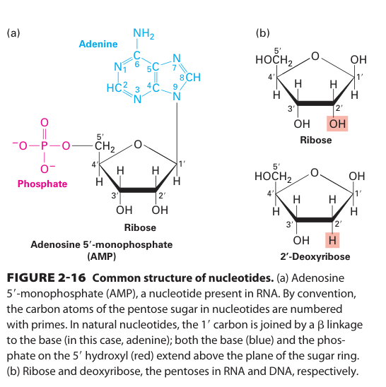
| nucleotide | 核苷酸 |
| adenosine 5'-monophosphate | 腺苷5'-一磷酸 |
| AMP | AMP |
| RNA | RNA |
| pentose | 戊糖 |
| β linkage | β连接 |
| base | 碱基 |
| adenine | 腺嘌呤 |
| phosphate | 磷酸 |
| hydroxyl | 羟基 |
| ribose | 核糖 |
| deoxyribose | 脱氧核糖 |
| DNA | DNA |
| sugar ring | 糖环 |
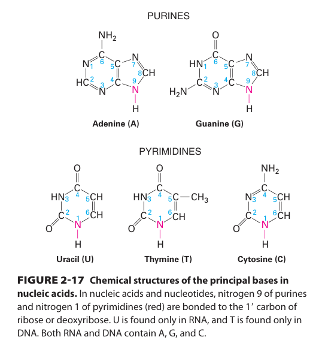
| purines | 嘌呤 |
| pyrimidines | 嘧啶 |
| adenine (A) | 腺嘌呤 |
| guanine (G) | 鸟嘌呤 |
| cytosine (C) | 胞嘧啶 |
| uracil (U) | 尿嘧啶 |
| thymine (T) | 胸腺嘧啶 |
| nucleic acids | 核酸 |
| nucleotides | 核苷酸 |
| ribose | 核糖 |
| deoxyribose | 脱氧核糖 |
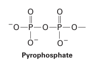
离子（H⁺），使磷酸带负电（见图 2-16a）。细胞中大多数核酸与蛋白质结合，蛋白质与带负电磷酸形成离子相互作用。
生物体的细胞和胞外液体含低浓度的核苷--碱基与糖的组合（不含磷酸）。核苷酸是 5' 羟基上酯化有一个、两个或三个磷酸基的核苷。酯化（酯的形成）涉及酸（如羧酸或磷酸）与醇的共价连接，伴随酸释放羟基（−OH）和另一分子羟基释放 H，共同形成水分子。此处磷酸与核糖的 5' 羟基酯化。核苷一磷酸有单个酯化磷酸（见图 2-16a）；核苷二磷酸含焦磷酸基：
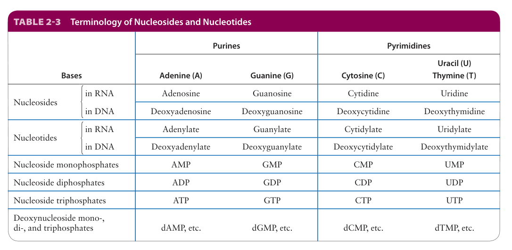
| bases | 碱基 |
| purines | 嘌呤 |
| pyrimidines | 嘧啶 |
| nucleosides | 核苷 |
| nucleotides | 核苷酸 |
| nucleoside monophosphates | 核苷一磷酸 |
| nucleoside diphosphates | 核苷二磷酸 |
| nucleoside triphosphates | 核苷三磷酸 |
| deoxynucleoside | 脱氧核苷 |
| adenosine | 腺苷 |
| guanosine | 鸟苷 |
| cytidine | 胞苷 |
| uridine | 尿苷 |
| deoxyadenosine | 脱氧腺苷 |
| deoxyguanosine | 脱氧鸟苷 |
| deoxycytidine | 脱氧胞苷 |
| deoxythymidine | 脱氧胸苷 |
| adenylate | 腺苷酸 |
| guanylate | 鸟苷酸 |
| cytidylate | 胞苷酸 |
| uridylate | 尿苷酸 |
| adenine (A) | 腺嘌呤 |
| guanine (G) | 鸟嘌呤 |
| cytosine (C) | 胞嘧啶 |
| uracil (U) | 尿嘧啶 |
| thymine (T) | 胸腺嘧啶 |
核苷三磷酸有第三个磷酸。表 2-3 列出核酸中核苷和核苷酸的名称及各种核苷磷酸形式。核苷三磷酸用于核酸合成（第 5 章）。GTP 参与胞内信号传导并作为能量储库（特别是蛋白质合成），ATP（本章稍后讨论）是使用最广泛的生物能量载体。
单糖共价组装成线性和分枝多糖
多糖的构建块是简单糖或单糖。单糖是碳水化合物，字面意思是碳与水的一比一共价结合（CH₂O）ₙ，n 等于 3、4、5、6 或 7。己糖（n=6）和戊糖（n=5）是最常见的单糖。所有单糖含羟基（−OH）和醛基或酮基：
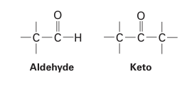
许多生物学重要的糖是己糖，包括葡萄糖、甘露糖和半乳糖（图 2-18）。甘露糖与葡萄糖的差别仅在碳 2 上基团取向相反。类似地，半乳糖与葡萄糖的差别仅在碳 4 上基团取向。葡萄糖与甘露糖或半乳糖的互变需要断裂和形成共价键；此类反应由差向异构酶催化。
d-葡萄糖（C₆H₁₂O₆）是复杂多细胞生物中大多数细胞的主要外部能源。它可存在三种形式：线性结构和两种不同的半缩醛环结构（图 2-18a）。碳 1 的醛基与碳 5 的羟基结合，形成的半缩醛 d-葡萄吡喃糖含六元环。d-葡萄吡喃糖的 α 异头物中，碳 1 的羟基从环"向下"；
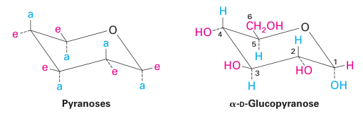
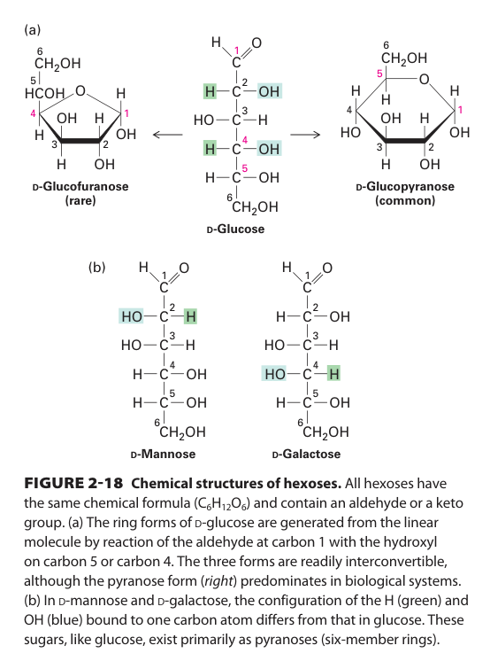
| hexoses | 己糖 |
| aldehyde | 醛基 |
| keto group | 酮基 |
| D-glucose | D-葡萄糖 |
| pyranose | 吡喃糖 |
| furanose | 呋喃糖 |
| D-mannose | D-甘露糖 |
| D-galactose | D-半乳糖 |
| configuration | 构型 |
| ring forms | 环形式 |
| linear molecule | 线性分子 |
| six-member rings | 六元环 |
β 异头物中此羟基"向上"。水溶液中 α 和 β 异头物易自发互变；平衡时约 1/3 α、2/3 β，开链形式很少。由于酶能区分 d-葡萄糖的 α 和 β 异头物，这些形式具有不同生物作用。线性葡萄糖碳 4 羟基与醛基缩合形成 d-葡萄呋喃糖（含五元环的半缩醛）。尽管 d-葡萄糖三种形式都存在于生物系统，吡喃糖（六元环）形式最丰富。
图 2-18a 的吡喃糖环描绘为平面。实际上，由于碳原子的四面体几何，吡喃糖环最稳定构象是非平面的椅形。此构象中，从环碳到非环原子（如 H 或 O）的每个键要么近乎垂直于环（轴向 a），要么近乎在环平面内（赤道 e）：
由两个单糖形成的二糖是最简单的多糖。二糖乳糖由半乳糖和葡萄糖组成，是奶中的主要糖；二糖蔗糖由葡萄糖和果糖组成，是植物光合作用的主要产物，精制为普通食糖（图 2-19）。
较大的多糖（含数十至数百个单糖单位）可作为葡萄糖储库、结构组分或帮助组织中细胞结合的黏合剂。动物细胞中最常见的储存碳水化合物是糖原（葡萄糖的高度分枝多聚物）。肝脏重量的 10% 可为糖原。植物细胞中的主要储存碳水化合物淀粉也是葡萄糖多聚物，有不分枝（直链淀粉）和轻度分枝（支链淀粉）形式。糖原和淀粉都由葡萄糖的 α 异头物组成。相反，植物细胞壁的主要成分纤维素（赋予许多植物结构硬度，见第 19 章）是葡萄糖 β 异头物的不分枝多聚物。人消化酶能水解淀粉中的 α 糖苷键但不能水解纤维素中的 β 糖苷键。许多植物、细菌和霉菌产生纤维素降解酶。牛和白蚁能分解纤维素，因为肠道内有纤维素降解细菌。细菌细胞壁由肽聚糖（被肽交联桥交联的多糖链）组成，赋予刚性和细胞形状。人泪和胃肠液含溶菌酶，能水解细菌细胞壁中的肽聚糖。
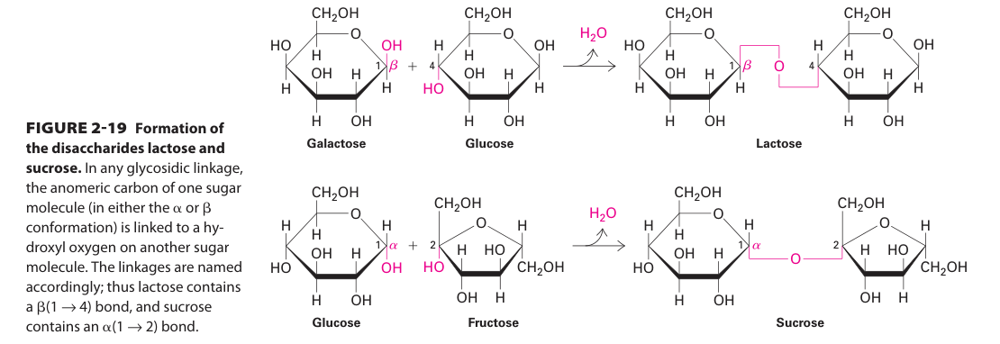
| disaccharides | 二糖 |
| lactose | 乳糖 |
| sucrose | 蔗糖 |
| glycosidic linkage | 糖苷键 |
| anomeric carbon | 异头碳 |
| α conformation | α构型 |
| β conformation | β构型 |
| hydroxyl oxygen | 羟基氧 |
| galactose | 半乳糖 |
| glucose | 葡萄糖 |
| fructose | 果糖 |
形成糖苷键（将单糖连接成多糖）的酶对一种糖的 α 或 β 异头物和另一种糖的特定羟基特异。原则上，任意两个糖分子可以多种方式连接，因为每个单糖有多个可参与糖苷键形成的羟基。此外，任一单糖可能连接到两个以上其他单糖，从而产生分枝点和非线性多聚物。糖苷键通常在生长的多糖链与单糖的共价修饰形式之间形成。此类修饰包括添加磷酸（如葡萄糖-6-磷酸）或核苷酸（如 UDP-半乳糖）：
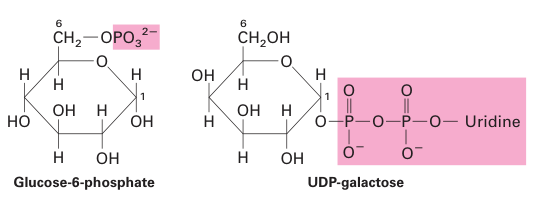
互转不同单糖的差向异构酶常使用核苷酸糖而非未修饰的"游离"糖。
许多复杂多糖含与各种小基团（特别是氨基、硫酸和乙酰基）共价连接的修饰糖。此类修饰在糖胺聚糖（第 19 章描述的胞外基质主要多糖组分）中丰富。
磷脂非共价缔合形成生物膜的基本双层结构
生物膜是具有双层结构的大型柔性片层。它们作为细胞及其胞内细胞器的边界，并形成某些病毒的外表面。膜字面定义了什么是细胞（外膜及膜内内容物）和什么不是（膜外胞外空间）。与蛋白质、核酸和多糖不同，膜由其组成构建块的非共价缔合组装。所有生物膜的主要构建块是磷脂，其物理性质负责膜片状双层结构的形成。除磷脂外，生物膜可含多种其他分子，包括胆固醇、糖脂和蛋白质。生物膜的结构和功能在第 7 章详述。此处我们聚焦生物膜中的磷脂。
要理解磷脂分子结构，我们必须理解其每个组成部分及如何组装。磷脂分子由两个长链非极性脂肪酸基（通常经酯键）连接到小的强极性基团组成，包括短有机分子如甘油（三羟丙烷）、一个磷酸基，以及通常一个小的有机分子（图 2-20）。
脂肪酸由连接到羧基（−COOH）的烃链组成。与葡萄糖一样，脂肪酸是许多细胞的重要能源（见第 12 章）。它们长度不同，但细胞中主要脂肪酸含偶数碳原子，通常 14、16、18 或 20。磷脂中主要脂肪酸见表 2-4。脂肪酸常以缩写 Cx:y 表示，x 为链中碳数，y 为双键数。含 12 个或更多碳原子的脂肪酸因长疏水烃链而在水溶液中几乎不溶。
所有碳-碳键都是单键（即无碳-碳双键）的脂肪酸称为饱和；含至少一个碳-碳双键的称为不饱和。
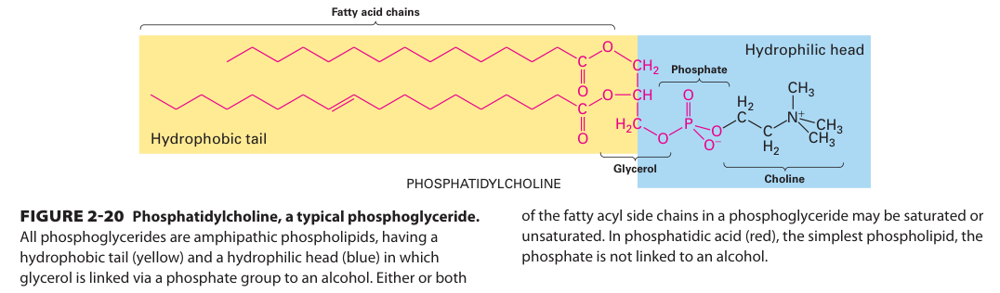
| phosphatidylcholine | 磷脂酰胆碱 |
| phosphoglyceride | 磷酸甘油酯 |
| amphipathic | 两亲性 |
| phospholipid | 磷脂 |
| hydrophobic tail | 疏水尾 |
| hydrophilic head | 亲水头 |
| glycerol | 甘油 |
| phosphate group | 磷酸基团 |
| alcohol | 醇 |
| fatty acyl side chains | 脂肪酰侧链 |
| saturated | 饱和 |
| unsaturated | 不饱和 |
| phosphatidic acid | 磷脂酸 |
含多个碳-碳双键的不饱和脂肪酸称为多不饱和。两种"必需"多不饱和脂肪酸--亚油酸（C18:2）和亚麻酸（C18:3）--哺乳动物不能合成，必须由饮食供给。哺乳动物能合成其他常见脂肪酸。
磷脂中，脂肪酸通过酯化共价连接到另一分子。此反应形成的组合分子中，来自脂肪酸的部分称为酰基或脂肪酰基。最常见磷脂形式--磷酸甘油酯-- illustrate 此结构，它含两个酰基连接到甘油三个羟基中的两个（见图 2-20）。
磷酸甘油酯中，甘油的一个羟基酯化到磷酸，另两个通常酯化到脂肪酸。最简单的磷脂磷脂酸仅含这些组分。磷脂酸等磷脂不仅是膜构建块，还是重要信号分子。溶血磷脂酸（2 位酰链被去除）相对水溶，可是细胞分裂的有效诱导剂（促细胞分裂剂）。在膜中发现的大多数磷脂中，磷酸基也酯化到另一亲水化合物的羟基。例如磷脂酰胆碱，
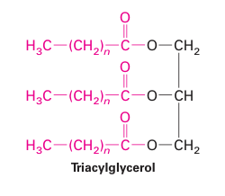
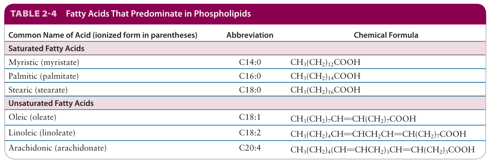
| fatty acids | 脂肪酸 |
| saturated | 饱和 |
| unsaturated | 不饱和 |
| myristic/myristate | 豆蔻酸/豆蔻酸根 |
| palmitic/palmitate | 棕榈酸/棕榈酸根 |
| stearic/stearate | 硬脂酸/硬脂酸根 |
| oleic/oleate | 油酸/油酸根 |
| linoleic/linoleate | 亚油酸/亚油酸根 |
| arachidonic/arachidonate | 花生四烯酸/花生四烯酸根 |
| ionized form | 离子化形式 |
| chemical formula | 化学式 |
| phospholipids | 磷脂 |
胆碱连接到磷酸（见图 2-20）。带负电的磷酸及酯化到它的带电或极性基团能与水强烈相互作用。磷酸及其相关酯化基团构成磷脂的"头"基（亲水），而脂肪酰链（"尾"）疏水。其他常见磷酸甘油酯及相关头基见表 2-5。像磷脂这样既有疏水区又有亲水区的分子称为两亲性。第 7 章将见磷脂的两亲性如何使其组装成片状双层，脂肪酰尾指向片中心，头基指向外的水环境（见图 2-13）。
脂肪酰基也可共价连接到其他脂肪分子，包括三酰甘油（含三个酯化到甘油的酰基）：
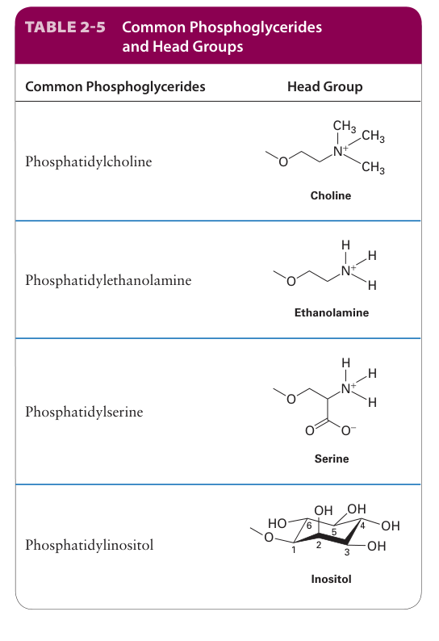
| phosphoglycerides | 磷酸甘油酯 |
| head group | 头基 |
| phosphatidylcholine | 磷脂酰胆碱 |
| phosphatidylethanolamine | 磷脂酰乙醇胺 |
| phosphatidylserine | 磷脂酰丝氨酸 |
| phosphatidylinositol | 磷脂酰肌醇 |
| choline | 胆碱 |
| ethanolamine | 乙醇胺 |
| serine | 丝氨酸 |
| inositol | 肌醇 |
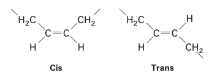
它们也可共价连接到强疏水分子胆固醇（一种醇）形成胆固醇酯：
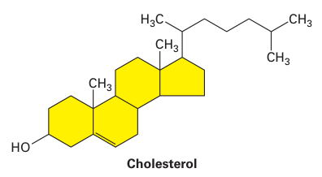
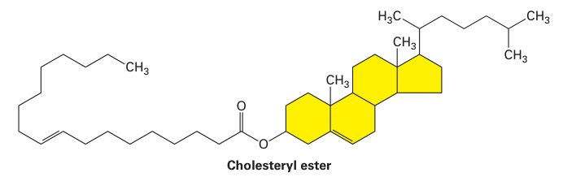
三酰甘油和胆固醇酯是极不溶于水的分子，脂肪酸和胆固醇在其中储存或运输。三酰甘油是脂肪细胞中脂肪酸的储存形式，是膳食脂肪的主要成分。胆固醇酯和三酰甘油通过血流在专门载体（脂蛋白）中在组织间运输（见第 14 章）。
如上所述，作为磷脂和三酰甘油关键组分的脂肪酸可为饱和或不饱和。不饱和脂肪酸中碳-碳双键（C=C）的一个重要后果是每个双键周围可能有两种立体异构构型（顺式和反式）：
顺式双键在饱和脂肪酸原本柔性的直酰链中引入刚性弯折（图 2-21）。一般来说，生物系统中的不饱和脂肪酸只含顺式双键。无双折的饱和脂肪酸可紧密堆叠，熔点高于不饱和脂肪酸。黄油中的主要脂肪分子是含饱和脂肪酰链的三酰甘油，故黄油常温下通常为固态。含顺式双键折的不饱和脂肪酰链不能像饱和链那样紧密堆叠。故由含不饱和脂肪酰基三酰甘油组成的植物油常温下通常为液态。植物油可部分氢化以将部分不饱和脂肪酰链转化为饱和脂肪酰链。结果氢化植物油可塑造成人造黄油固体条。氢化反应的副产品是一些脂肪酰链转化为反式脂肪酸（俗称"反式脂肪"）。这些"反式脂肪"见于部分氢化人造黄油和其他食品，非天然。饱和和反式脂肪酸物理性质相似，如常温下常为固态。相对于不饱和脂肪，其消费与血浆胆固醇水平升高相关，一些营养学家不鼓励。■
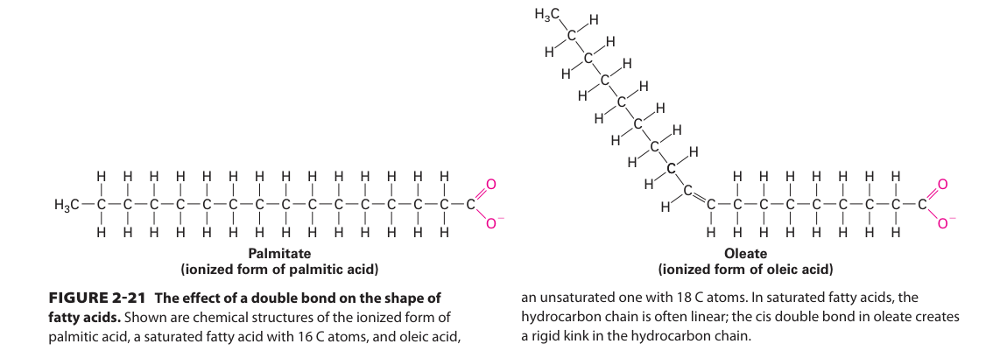
| double bond | 双键 |
| fatty acids | 脂肪酸 |
| palmitic acid | 棕榈酸 |
| palmitate | 棕榈酸根 |
| oleic acid | 油酸 |
| oleate | 油酸根 |
| saturated | 饱和 |
| unsaturated | 不饱和 |
| hydrocarbon chain | 烃链 |
| cis double bond | 顺式双键 |
| rigid kink | 刚性弯折 |
| ionized form | 离子化形式 |
第 2.2 节关键概念
细胞的化学构建块
● 大分子是通过脱水反应由共价键连接的单体亚基多聚物。细胞中有三大类大分子：蛋白质（由肽键连接的氨基酸组成）、核酸（由磷酸二酯键连接的核苷酸组成）和多糖（由糖苷键连接的单糖组成，见图 2-13）。磷脂是第四大化学构建块，非共价组装成生物膜。
● 20 种常见氨基酸侧链的大小、形状、电荷、疏水性和反应性差异决定蛋白质的化学和结构性质（见图 2-14）。侧链分三大类：疏水、亲水（碱性、酸性、极性）和特殊（见图 2-14）。记住哪些氨基酸属于每类是有帮助的。
● DNA 和 RNA 中核苷酸的碱基是连接到戊糖的含碳和氮的环。它们分两组：嘌呤（两环--腺嘌呤 A 和鸟嘌呤 G）和嘧啶（一环--胞嘧啶 C、胸腺嘧啶 T 和尿嘧啶 U，见图 2-17）。A、G、T、C 见于 DNA，A、G、U、C 见于 RNA。
● 葡萄糖和其他己糖可存在三种形式：开链线性结构、六元（吡喃糖）环和五元（呋喃糖）环（见图 2-18）。生物系统中 d-葡萄糖的吡喃糖形式占主导。
● 糖苷键在一种糖的 α 或 β 异头物与另一种糖的羟基之间形成，导致二糖和其他多糖形成（见图 2-19）。
● 磷脂是两亲性分子，疏水尾（常两条脂肪酰链）通过小有机分子（常甘油）连接到亲水头（见图 2-20）。
2.3 化学反应与化学平衡
我们现在转向化学反应，其中反应物化学物质中的键（主要是共价键）被断裂、新键形成以产生反应产物。任何时刻，每个细胞中同时发生数百种不同化学反应，许多化学物质原则上可经历多种化学反应。反应能进行的程度和发生的速率共同决定细胞的化学组成。本节讨论平衡和稳态的概念，以及解离常数和 pH。这些概念在全书反复出现，熟悉它们很重要。2.4 节我们讨论能量如何影响化学反应的程度和速率。
化学反应在正向和逆向反应速率相等时处于平衡
当反应物最初混合（尚无产物形成）时，形成产物的正向反应速率部分由反应物初始浓度决定，后者决定反应物相碰并反应的可能性（图 2-22）。随着反应产物积累，每个反应物浓度降低，正向反应速率也降低。同时，一些产物分子开始参与逆向反应，重新形成反应物。反应"倒退"的能力称为微观可逆性。逆反应起初慢，但随产物浓度增加而加速。最终，正向和逆向反应速率相等，反应物和产物浓度停止变化。此时称系统处于化学平衡。
达到平衡时产物浓度与反应物浓度之比称为平衡常数（Keq），是固定值。因此 Keq 提供了反应达到平衡时所进行程度的度量。催化剂可增加化学反应速率，但不改变平衡常数（见 2.4 节）。催化剂加速共价键的形成和断裂，但本身在反应中不被永久改变。
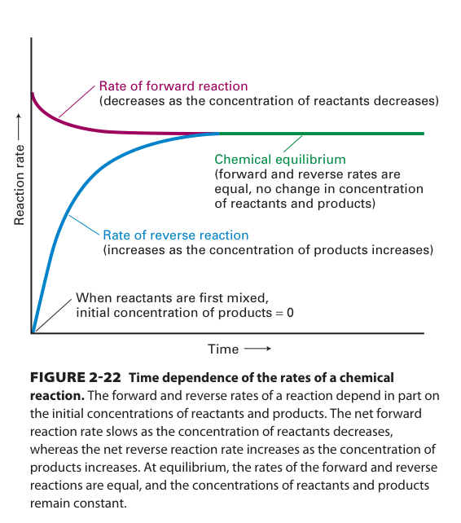
| reaction rate | 反应速率 |
| forward reaction | 正向反应 |
| reverse reaction | 逆向反应 |
| chemical equilibrium | 化学平衡 |
| concentration | 浓度 |
| reactants | 反应物 |
| products | 产物 |
平衡常数反映化学反应的程度
对任何化学反应，Keq 取决于反应物和产物的化学性质、温度和压力（特别是涉及气体的反应）。在标准物理条件（生物系统为 25 °C 和 1 atm 压力）下，给定反应的 Keq 总是相同，无论是否有催化剂。
对于有三个反应物和三个产物的一般反应，
aA + bB + cC ⇌ zZ + yY + xX (2-1)
其中大写字母代表特定分子或原子，小写字母代表反应中各自的数目，平衡常数公式为
Keq = [X]ˣ[Y]ʸ[Z]ᶻ / ([A]ᵃ[B]ᵇ[C]ᶜ) (2-2)
其中方括号表示分子浓度。方程 2-2 中，反应物和产物浓度是平衡时的浓度。正向反应速率（方程 2-1 中从左到右）为
Rateforward = kf[A]ᵃ[B]ᵇ[C]ᶜ
其中 kf 是正向反应速率常数。类似地，逆反应速率（从右到左）为
Ratereverse = kr[X]ˣ[Y]ʸ[Z]ᶻ
其中 kr 是逆反应速率常数。这些反应速率方程无论反应是否达到平衡都适用。重要的是记住，反应的正向和逆向速率可因反应物或产物浓度变化而变化，但正向和逆向速率常数不变，故称"常数"。混淆速率和速率常数是常见错误。平衡时正向和逆向速率相等，故 Rateforward/Ratereverse = 1。重新排列这些方程，平衡常数可表示为速率常数之比：
Keq = kf/kr (2-3)
当我们想思考化学反应发生时释放或吸收的能量时，Keq 概念特别有用。2.4 节将详细讨论。
细胞中的化学反应处于稳态
在适当条件下并给予足够时间，试管中进行的单一生化反应最终达到平衡，此时反应物和产物浓度不随时间变化，因为
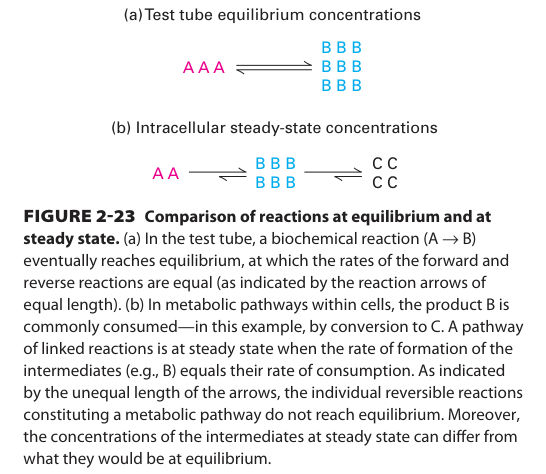
| equilibrium | 平衡 |
| steady state | 稳态 |
| metabolic pathways | 代谢途径 |
| intermediates | 中间体 |
| test tube | 试管 |
| reversible reactions | 可逆反应 |
| formation | 生成 |
| consumption | 消耗 |
正向和逆向反应速率相等。然而在细胞内，许多反应在通路中相连，其中一个反应的产物并非简单通过逆反应转化回反应物。例如，一个反应的产物可能作为另一反应的反应物，或被泵出细胞。在这种更复杂的情况下，原反应永远无法达到平衡，因为一些产物没有机会转化回反应物。尽管如此，在这种非平衡条件下，一种物质的形成速率可等于其消耗速率，因此该物质浓度随时间保持恒定。在这种情况下，产生和消耗该物质的相连反应系统称为处于稳态（图 2-23）。此类相连反应的一个后果是它们防止中间体过度积累，保护细胞免受高浓度有毒中间体的有害影响。当正在进行的反应的产物浓度不随时间变化时，可能是平衡状态的结果，也可能是稳态的结果。在生物系统中，当代谢物浓度（如血糖水平）不随时间变化时--一种称为稳态（homeostasis）的状态--这是稳态而非平衡的结果。
结合反应的解离常数反映相互作用分子的亲和力
平衡概念也适用于一个分子与另一分子的结合（两者均无非共价变化）。许多重要细胞过程依赖此类结合"反应"，涉及各种非共价相互作用的形成和断裂而非共价键。一个常见例子是配体（如激素胰岛素或肾上腺素）与细胞表面受体的结合，触发胞内信号通路（见第 15 章）。另一个例子是蛋白质与 DNA 分子中特定碱基序列的结合，常导致附近基因表达增加或减少（见第 9 章）。若已知结合反应的平衡常数，可预测所得复合物的稳定性。
为说明确定非共价缔合复合物浓度的一般方法，让我们计算蛋白质（P）与 DNA（D）结合形成蛋白质-DNA 复合物（PD）的程度：
P + D ⇌ PD
最常见地，结合反应用解离常数（Kd）描述，它是平衡常数的倒数。对此结合反应，解离常数由平衡时三个组分浓度计算：
Kd = [P][D] / [PD] (2-4)
值得注意的是，在此类结合反应中，当一半 DNA 与蛋白质结合（[PD] = [D]）时，P 的浓度等于 Kd。Kd 越低，结合一半 D 所需的 P 浓度越低。换言之，Kd 越低，P 与 D 的结合越紧（亲和力越高）。
通常，蛋白质与特定 DNA 序列的结合表现出 Kd 为 10⁻¹⁰ M（M 表示摩尔浓度，即摩尔每升 mol/L）。为将此解离常数的量级与胞内结合/未结合 DNA 比率联系起来，让我们考虑一个简单例子：体积为 1.5 × 10⁻¹⁵ L 的细菌细胞，含 1 个 DNA 分子和 10 个 DNA 结合蛋白 P 分子。此情况下，给定 Kd 为 10⁻¹⁰ M 且细胞中 P 总浓度（约 111 × 10⁻¹⁰ M，约比 Kd 高百倍），99% 的时间该特定 DNA 序列将有蛋白分子结合，1% 的时间没有，尽管细胞只含 10 个蛋白分子！显然 P 和 D 彼此高亲和力、紧密结合，这反映在其结合反应的低解离常数值上。对于蛋白质-蛋白质和蛋白质-DNA 结合，Kd 约 10⁻⁹ M（纳摩尔）被视为紧密，约 10⁻⁶ M（微摩尔）中等紧密，约 10⁻³ M（毫摩尔）相对较弱。
像蛋白质这样的大型生物大分子可有多个结合表面，同时结合多个分子（图 2-24）。某些情况下，这些结合反应独立，各有独立的 Kd 值且互不影响。其他情况下，一个分子在大分子某位点结合可改变远处位点的三维形状或构象，从而改变该远处位点与其他分子的结合相互作用。
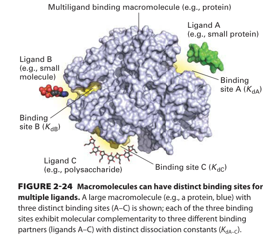
| macromolecule | 大分子 |
| binding sites | 结合位点 |
| ligands | 配体 |
| molecular complementarity | 分子互补性 |
| dissociation constants | 解离常数 |
| Kd | 解离常数Kd |
| protein | 蛋白质 |
| small molecule | 小分子 |
| polysaccharide | 多糖 |
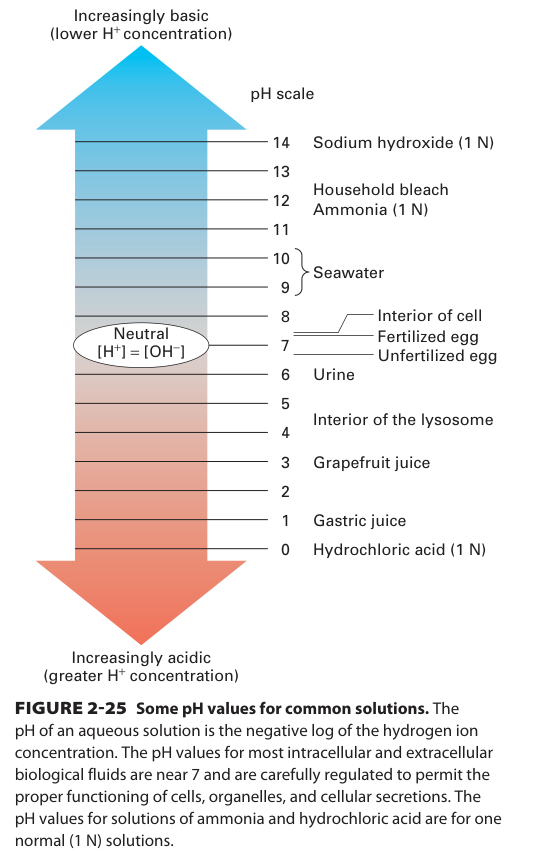
| pH | pH |
| aqueous solution | 水溶液 |
| hydrogen ion concentration | 氢离子浓度 |
| negative log | 负对数 |
| intracellular | 胞内 |
| extracellular | 胞外 |
| biological fluids | 生物液体 |
| organelles | 细胞器 |
| cellular secretions | 细胞分泌物 |
| acidic | 酸性 |
| basic | 碱性 |
| neutral | 中性 |
| sodium hydroxide | 氢氧化钠 |
| hydrochloric acid | 盐酸 |
| ammonia | 氨 |
| gastric juice | 胃液 |
| urine | 尿液 |
| seawater | 海水 |
| lysosome | 溶酶体 |
| household bleach | 家用漂白剂 |
| fertilized egg | 受精卵 |
| unfertilized egg | 未受精卵 |
上述氨基酸侧链修饰常贡献于此类结合相互作用所需的分子形状。这些共价和非共价结合反应是一个分子改变、从而调节另一分子结构和结合活性的重要机制。第 3 章更详细考察此调节机制。
生物体液具有特征 pH 值
细胞内和所有胞外液体中的溶剂是水。任何水溶液的一个重要特征是带正电的氢离子（H⁺）和带负电的氢氧根离子（OH⁻）的浓度。由于这些离子是 H₂O 的解离产物，它们是所有生命系统的组成成分，并被细胞内分子间发生的许多反应释放。这些离子也可被运入或运出细胞，如胃壁细胞分泌高酸性胃液时。
水分子解离时，其一个极性 H−O 键断裂。所得氢离子（称为质子）作为自由离子寿命短，很快与水分子结合形成水合氢离子（H₃O⁺）。为方便，我们指溶液中氢离子浓度 [H⁺]，尽管此量实际代表水合氢离子浓度 [H₃O⁺]。H₂O 解离时每个 H⁺ 伴随一个 OH⁻。水的解离是可逆反应：
H₂O ⇌ H⁺ + OH⁻
25 °C 时，[H⁺][OH⁻] = 10⁻¹⁴ M²，故纯水中 [H⁺] = [OH⁻] = 10⁻⁷ M。
溶液中氢离子浓度按惯例以 pH 表示，定义为氢离子浓度的负对数。25 °C 纯水的 pH 为 7：
pH = −log [H⁺] = log(1/[H⁺]) = log(1/10⁻⁷) = 7
重要的是记住，pH 相差一个单位代表质子浓度相差十倍。在 pH 标度上，7.0 为中性：低于 7.0 表示酸性溶液（[H⁺] 较高），高于 7.0 表示碱性溶液（图 2-25）。例如，富含盐酸（HCl）的胃液 pH 约 1，其 [H⁺] 约为 pH 约 7.2–7.4 的细胞质的 100 万倍。
虽然细胞质 pH 通常约 7.2，但真核细胞中某些细胞器（见第 1 章）内部可有低得多的 pH。例如溶酶体内部（腔）液体 pH 约 4.5。
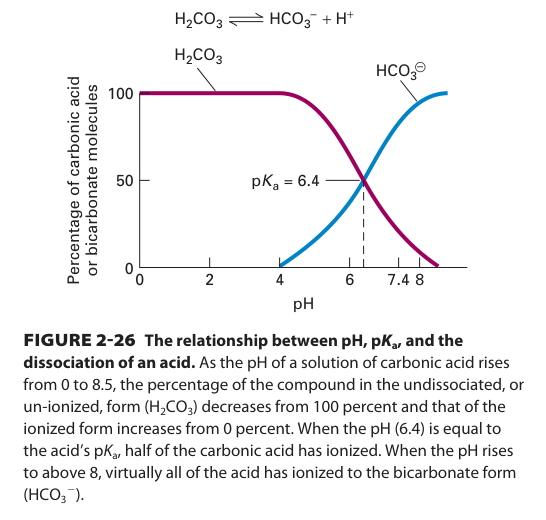
| pH | pH |
| pKa | pKa |
| dissociation | 解离 |
| carbonic acid | 碳酸 |
| bicarbonate | 碳酸氢根 |
| ionized | 电离 |
| undissociated | 未解离 |
溶酶体内许多降解酶在酸性环境中功能最佳，而在近中性 pH 的细胞质环境中其作用受抑制。如本例所示，维持特定 pH 对某些细胞结构的正常功能至关重要。另一方面，细胞 pH 的剧烈变化可能在控制细胞活性中起重要作用。例如，海胆（一种水生动物）未受精卵的细胞质 pH 为 6.6。受精后 1 分钟内 pH 升至 7.2，即 [H⁺] 降至原值的约 1/4，此变化对卵的后续生长和分裂是必需的。
氢离子由酸释放、被碱摄取
一般而言，酸是倾向于释放氢离子（H⁺）的任何分子、离子或化学基团，如羧基（−COOH）倾向于解离形成带负电的羧酸根离子（−COO⁻）；或盐酸（HCl）。相反，碱是易于结合 H⁺ 的任何分子、离子或化学基团，如氢氧根离子（OH⁻）；氨（NH₃）形成铵离子（NH₄⁺）；或氨基（−NH₂）。向水溶液加酸时，[H⁺] 增加，pH 下降。相反，加碱时 [H⁺] 减少，pH 上升。因 [H⁺][OH⁻] = 10⁻¹⁴ M²，[H⁺] 的任何增加都伴随 [OH⁻] 的相应减少，反之亦然。
许多生物分子既含酸性基团又含碱性基团。例如在中性溶液（pH = 7.0）中，许多氨基酸主要以双重电离形式存在，其中羧基失去一个质子、氨基接受一个质子：
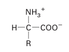
其中 R 代表不带电侧链。这种含等量正负离子的分子称为两性离子。两性离子无净电荷，呈中性。在极端 pH 值下，氨基酸这两个可电离基团中只有一个带电：低 pH 时为 −NH₃⁺，高 pH 时为 −COO⁻。酸（或较大分子中的酸基）HA 的解离反应可写为 HA ⇌ H⁺ + A⁻。此反应的平衡常数记为 Ka（下标 a 代表"acid"），定义为 Ka = [H⁺][A⁻]/[HA]。两边取对数并重排，得到平衡常数与 pH 之间非常有用的关系：
pH = pKa + log([A⁻]/[HA]) (2-5)
其中 pKa = −log Ka。
由此表达式（通常称为 Henderson-Hasselbalch 方程）可见，任何酸的 pKa 等于半数分子解离、半数中性（未解离）时的 pH。这是因为当 [A⁻] = [HA] 时，log([A⁻]/[HA]) = 0，故 pKa = pH。Henderson-Hasselbalch 方程允许我们在已知溶液 pH 和酸 pKa 时计算酸的解离程度（即解离和未解离形式之比）。实验上，通过测量 [A⁻] 和 [HA] 随溶液 pH 的变化，可计算酸的 pKa，从而得到解离反应的平衡常数 Ka（图 2-26）。知道分子的 pKa 不仅提供了其性质的重要描述，还允许我们利用这些性质来操控水溶液的酸度，并理解生物系统如何控制其水溶液的这一关键特征。
缓冲液维持胞内和胞外液体的 pH
活的、活跃代谢的细胞必须在细胞质中维持约 7.2–7.4 的恒定 pH，即使其代谢产生许多酸。细胞有弱碱和弱酸的储备，称为缓冲液，确保细胞质 pH 保持相对恒定，尽管代谢产生或细胞摄取/分泌分子和离子产生的 H⁺ 或 OH⁻ 量有小波动。缓冲液通过"吸收"代谢产生或添加到细胞的过量 H⁺ 或 OH⁻ 来实现。如下所见，当溶液 pH 与缓冲液 pKa 相近时，缓冲液在防止 pH 变化方面最有效。
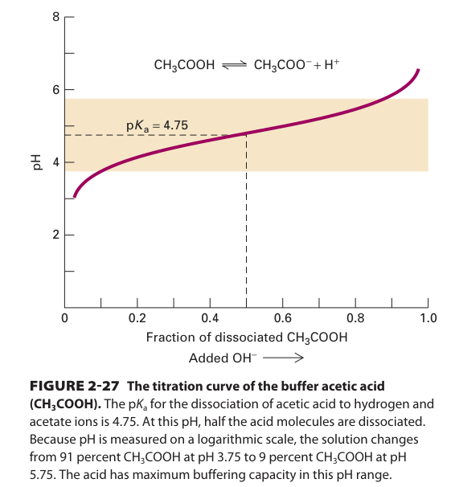
| titration curve | 滴定曲线 |
| buffer | 缓冲液 |
| acetic acid | 醋酸 |
| acetate | 醋酸根 |
| dissociation | 解离 |
| pKa | pKa |
| buffering capacity | 缓冲容量 |
| logarithmic scale | 对数刻度 |
若向 pH 等于缓冲液 pKa（[HA] = [A⁻]）的缓冲溶液加额外酸（或碱），溶液 pH 会变化，但变化比无缓冲液时小。这是因为加入酸释放的质子被缓冲液电离形式（A⁻）吸收；同样，加碱产生的氢氧根离子被未解离缓冲液（HA）释放的质子中和。缓冲液或任何其他物质释放或吸收氢离子的能力部分取决于该物质已吸收或释放质子的程度，后者又取决于溶液 pH 相对于该物质 pKa 的关系。缓冲液最小化 pH 变化的能力（缓冲容量）取决于缓冲液浓度及其 pKa 值与 pH 的关系，由 Henderson-Hasselbalch 方程表达。
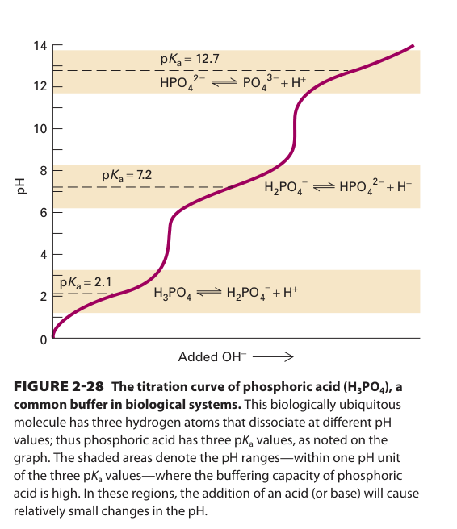
| phosphoric acid | 磷酸 |
| titration curve | 滴定曲线 |
| buffer | 缓冲液 |
| pKa | pKa |
| buffering capacity | 缓冲容量 |
| hydrogen atoms | 氢原子 |
| dissociate | 解离 |
| biological systems | 生物系统 |
图 2-27 所示醋酸的滴定曲线说明 pH 对未电离（HA）和电离形式（A⁻）分子比例的影响。pH 等于 pKa 时，一半醋酸解离（虚线）。在酸 pKa 以下一个 pH 单位时，91% 分子为 HA 形式；以上一个 pH 单位时，91% 为 A⁻ 形式。在 pKa 上下超过一个单位的 pH 值（图 2-27 未着色区域），弱酸和弱碱的缓冲容量迅速下降。换言之，向含 HA 和 A⁻ 混合物且 pH 接近 pKa 的溶液加入相同摩尔数的碱（如以 NaOH 形式加入的氢氧根离子）引起的 pH 变化，比无 HA 和 A⁻ 或 pH 远离 pKa 时小。
所有生物系统都含一种或多种缓冲液。磷酸离子（磷酸的电离形式）在细胞中含量相当大，对维持或缓冲细胞质 pH 重要。磷酸（H₃PO₄）有三个可解离的质子，但它们不同时解离。每个质子的失去可用一个独立的解离反应和 pKa 描述，如图 2-28 所示。向磷酸溶液加氢氧根离子时，pH 在接近三个 pKa 值（着色区域）时变化比不接近任何 pKa 时平缓得多。磷酸的滴定曲线显示第二个质子解离的 pKa 为 7.2。因此，pH 7.2 时，根据 Henderson-Hasselbalch 方程，约 50% 的细胞磷酸为 H₂PO₄⁻、约 50% 为 HPO₄²⁻。因此，磷酸在 pH 约 7.2（细胞质近似 pH）和 pH 7.4（人血 pH）附近是极好的缓冲液。蛋白质氨基酸侧链的氨基（赖氨酸）、胍基（精氨酸）和羧酸根（天冬氨酸根、谷氨酸根）部分，以及蛋白质 N 端和 C 端的氨基和羧酸根基团也能结合和释放质子。因此，细胞内和许多胞外液体中高浓度存在的蛋白质本身可作为缓冲液。
第 2.3 节关键概念
化学反应与化学平衡
● 当正向反应速率等于逆向反应速率时，化学反应处于平衡，此时反应物或产物浓度无净变化。
● 反应的平衡常数 Keq 反映平衡时产物与反应物之比，因而是反应程度和反应物、产物相对稳定性的度量。
● Keq 取决于温度、压力及反应物和产物的化学性质，但独立于反应速率和反应物、产物的初始浓度。
● 对任何反应，平衡常数 Keq 等于正向速率常数与逆向速率常数之比（kf/kr）。反应物转化为产物及反之的转化速率取决于速率常数和反应物或产物浓度。
● 细胞内，代谢通路中的相连反应通常不处于平衡，而处于稳态，此时中间体的形成速率等于消耗速率（见图 2-23），故中间体浓度不变化。
● 两分子非共价结合的解离常数 Kd 是所形成复合物（如配体-受体或蛋白质-DNA 复合物）稳定性的度量。Kd 约 10⁻⁹ M（纳摩尔）为紧密，约 10⁻⁶ M（微摩尔）中等紧密，约 10⁻³ M（毫摩尔）相对较弱。
● pH 是氢离子浓度的负对数（−log [H⁺]）。细胞质 pH 通常约 7.2–7.4，而溶酶体内部 pH 约 4.5。
● 酸释放质子（H⁺），碱结合质子。
2.4 生化能学
能量的转化、储存和使用是细胞经济学的核心。能量可定义为做功的能力，这一概念对细胞与对汽车引擎和发电厂同样适用。储存在化学键内的能量可被利用以支持化学工作和细胞的物理运动。
本节回顾能量如何影响化学反应的程度（化学热力学）和化学反应的速率（化学动力学）。
几种能量形式在生物系统中重要
能量有两种主要形式：动能和势能。动能是运动的能量（如分子运动）。势能是储存的能量（如储存在共价键中的能量）。势能在细胞的能量经济中尤为重要。
热能（即热）是动能的一种形式--分子运动的能量。热要做功，必须从高温区（分子运动平均速度较大）流向低温区。尽管细胞内外环境间可存在温度差，但这些热梯度通常不作为细胞活动的能源。温血动物（进化出体温调节机制）的热能主要用于维持生物体恒定温度。这是重要的稳态功能，因为许多细胞活动的速率依赖于温度。例如，将哺乳动物细胞从正常体温 37 °C 降至 4 °C 几乎可"冻结"或停止许多细胞过程（如胞内膜运动）。
辐射能（光子或光波的动能）对生物学至关重要。辐射能可转化为热能，例如光被分子吸收并转化为分子运动。分子吸收的辐射能也可通过将电子移入更高能轨道而改变分子的电子结构，随后可从中回收能量做功。例如光合作用中，叶绿素等色素分子吸收的光能随后转化为化学键的能量（见第 12 章）。
机械能（生物学中动能的主要形式）通常由储存的化学能转化而来。例如细胞骨架丝长度的变化产生推或拉膜和细胞器的力（见第 17、18 章）。
电能（运动电子或其他带电粒子的能量）是另一种主要动能形式，对膜功能尤为重要，如电活性神经元（见第 22 章）。
几种形式的势能具有生物学意义。化学势能（储存在连接分子中原子的键中的能量）是生物学的核心。事实上，本书描述的大多数生化反应涉及至少一个共价化学键的形成或断裂。一般而言，在典型生物分子中形成共价键需消耗能量，断裂这些键时释放能量。例如，
葡萄糖共价键中的高势能可通过细胞中受控的酶促燃烧释放（见第 12 章）。此能量被细胞利用做多种功。
第二种生物学重要的势能是浓度梯度中的能量。当屏障（如膜）一侧的物质浓度不同于另一侧时，存在浓度梯度。所有细胞通过与环境选择性交换营养物、废物和离子，在其内部与外部液体间形成浓度梯度。此外，细胞器内液体（如线粒体、溶酶体）常含与细胞质不同的离子和其他分子浓度；如上节所见，溶酶体内质子浓度约为细胞质的 500 倍。跨膜质子浓度梯度是线粒体产能的重要驱动力。
细胞中第三种势能是电势--电荷分离的能量。例如，几乎所有细胞质膜两侧有约 200,000 伏每厘米的电荷梯度。第 11 章讨论浓度梯度和电势梯度如何产生和维持，第 12 章讨论如何转化为化学势能。
细胞可将一种能量形式转化为另一种
根据热力学第一定律，能量既不能创造也不能消灭，但可从一种形式转化为另一种。（核反应中质量转化为能量，但这与生物系统无关。）能量转化在生物学中非常重要。例如光合作用中，光的辐射能转化为蔗糖或淀粉分子中原子间共价键的化学势能。在肌肉和神经中，储存在共价键中的化学势能分别转化为肌肉收缩的动能和神经传导的电能。在所有细胞中，断裂某些化学键释放的势能用于产生浓度和电势梯度形式的势能。类似地，储存在化学浓度梯度或电势梯度中的能量用于合成化学键或将分子从膜一侧运到另一侧以产生浓度梯度。后一过程发生在葡萄糖等营养物运入某些细胞以及许多废物运出细胞时。
由于所有形式的能量可相互转换，它们可用相同的测量单位表示。虽然能量标准单位是焦耳，但生物化学家传统上使用卡路里（1 焦耳 = 0.239 卡路里）。1 卡路里是使 1 克水升高 1 °C 所需能量。本书用千卡测量能量变化（1 kcal = 1000 cal）。当你读到或听到食物中的"卡路里"（注意大写 C）时，几乎总是指此处定义的千卡。
自由能变化决定化学反应是否自发进行
化学反应可根据过程中吸收或释放能量分为两类。放能反应（"释放能量"）中，产物含能量少于反应物，自发进行，释放的能量通常以热释放，一般导致温度升高（如木材氧化燃烧）。吸能反应（"吸收能量"）中，产物含能量多于反应物，反应中吸收能量。若无外部能源驱动，吸能反应不能进行。吸能反应是常用于治疗损伤的速冷包能快速冷却至室温以下的原因。捏碎冷包混合反应物，启动反应。
理解反应是放能还是吸能（因而是否自发）的根本重要概念是自由能（G），即吉布斯自由能（以 J. W. Gibbs 命名）。Gibbs（1863 年获美国第一个工程学博士）表明"所有系统都朝着自由能 [G] 最小化的方向变化"。换言之，当产物的自由能低于反应物的自由能时，化学反应自发进行。对于化学反应 反应物 ⇌ 产物，自由能变化 ΔG 为
ΔG = G产物 − G反应物
ΔG 与任何化学反应方向的关系可总结为三点：
● 若 ΔG 为负，正向反应趋向自发进行，反应时通常释放能量（放能反应，图 2-29）。ΔG 为负的反应称为热力学有利的。
● 若 ΔG 为正，正向反应不自发进行；必须向系统加能以迫使反应物变成产物（吸能反应）。
● 若 ΔG 为零，正向和逆向反应以等速率进行，反应物无自发净转化为产物或反之；系统处于平衡。
按惯例，反应的标准自由能变化（ΔG°′）是
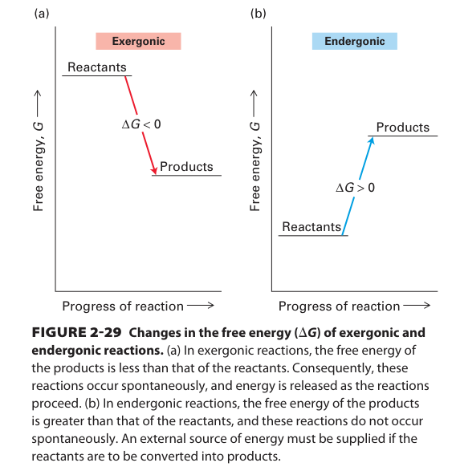
| free energy | 自由能 |
| exergonic | 放能 |
| endergonic | 吸能 |
| ΔG | ΔG（自由能变化） |
| reactants | 反应物 |
| products | 产物 |
| spontaneously | 自发 |
| external source of energy | 外部能量来源 |
298 K（25 °C）、1 atm 压力、pH 7.0（如纯水）、所有反应物和产物初始浓度 1 M（质子保持 10⁻⁷ M，即 pH 7.0）时的自由能变化值。大多数生物反应与这些标准条件不同，特别是反应物浓度通常低于 1 M。
化学系统的自由能可定义为 G = H − TS，其中 H 是键能或焓；T 是开氏温度（K）；S 是熵（无序或混乱度的度量）。根据热力学第二定律，任何孤立系统的自然趋势是变得更无序（即熵增加）。反应仅在焓和熵变化的综合效应导致更低 ΔG 时才能自发进行。即若温度恒定，反应仅在以下方程的 ΔG 为负时自发进行：
ΔG = ΔH − TΔS (2-6)
放热反应（"释放热"）中 ΔH 为负。吸热反应（"吸收热"）中 ΔH 为正。焓和熵变化的综合效应决定反应 ΔG 为正或负，从而决定反应是否自发。熵增加（ΔS > 0）的放热反应（ΔH < 0）自发进行（ΔG < 0）。吸热反应（ΔH > 0）在 ΔS 增加足够大使 TΔS 项能克服正 ΔH 时自发进行。
许多生物反应导致有序性增加从而熵减少（ΔS < 0）。一个明显例子是连接氨基酸形成蛋白质的反应。蛋白质分子溶液的熵低于相同未连接氨基酸溶液，因为任何氨基酸结合成长链时自由运动更受限（更有序）。因此，当细胞从其组成单体合成蛋白质等多聚物时，聚合反应仅在细胞能高效转移能量以既生成连接单体的键又克服聚合伴随的熵损失时才自发。细胞常通过将此类合成、降熵反应与具有很高负 ΔG 的独立反应（如核苷三磷酸水解）"偶联"来实现。这样，细胞可将环境中的能源转化为生命所需的高度组织化结构和代谢通路。
反应中自由能的实际变化受温度、压力和反应物产物初始浓度影响，故通常不同于标准自由能变化 ΔG°′。大多数生物反应（与其他在水溶液中进行的反应一样）也受溶液 pH 影响。我们可用方程估算不同于标准条件的温度和初始浓度的自由能变化：
ΔG = ΔG°′ + RT ln Q = ΔG°′ + RT ln([产物]/[反应物]) (2-7)
其中 R 是气体常数 1.987 cal/(度·mol)，T 是开氏温度，Q 是产物与反应物的初始比。对于反应 A + B ⇌ C（两分子结合形成第三个），方程 2-7 中 Q = [C]/[A][B]。此情况下，[A] 或 [B] 初始浓度增加将导致 ΔG 更负，从而驱动反应向自发形成 C。
无论特定生化反应的 ΔG°′ 如何，在胞内反应物和产物浓度下仅当 ΔG 为负时才在细胞内自发进行。例如，3-磷酸甘油醛（G3P）转化为磷酸二羟丙酮（DHAP）（葡萄糖分解的两个中间体），
G3P ⇌ DHAP
ΔG°′ 为 −1840 cal/mol。若 G3P 和 DHAP 初始浓度相等，则 ΔG = ΔG°′（因 RT ln = 0）；此情况下，可逆反应 G3P ⇌ DHAP 将自发朝形成 DHAP 方向进行直到平衡。但若初始 [DHAP] = 0.1 M、[G3P] = 0.001 M，
其他条件标准，则方程 2-7 中 Q = 0.1/0.001 = 100，ΔG = +887 cal/mol。此条件下反应朝形成 G3P 方向进行。
反应的 ΔG 独立于反应速率。事实上，在正常生理条件下，若无增加反应速率的机制，维持生命所需的生化反应几乎没有会发生的。如下文及第 3 章详述，生物系统中反应速率通常由酶（蛋白质催化剂）活性决定，酶加速产物形成而不改变 ΔG 值。
反应的 ΔG°′ 可从其 Keq 计算 处于平衡的化学混合物处于最低自由能的稳定状态。对于标准条件下平衡系统（ΔG = 0，Q = Keq），可写
ΔG°′ = −2.3RT log Keq = −1362 log Keq (2-8)
（注意改为以 10 为底对数）。因此，若测定平衡时反应物和产物浓度（即 Keq），可计算 ΔG°′。例如，3-磷酸甘油醛与磷酸二羟丙酮互转（G3P ⇌ DHAP）的标准 Keq 为 22.2。代入方程 2-8，易算出该反应 ΔG°′ 为 −1840 cal/mol。
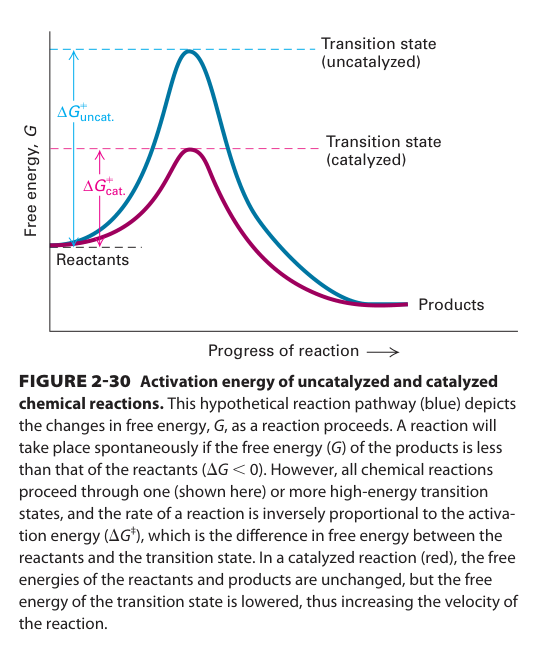
| activation energy | 活化能 |
| transition state | 过渡态 |
| catalyzed | 催化 |
| uncatalyzed | 未催化 |
| free energy | 自由能 |
| ΔG‡ | ΔG‡（活化能） |
| reaction pathway | 反应路径 |
| velocity | 速率 |
| ΔG | ΔG |
重排方程 2-8 并取反对数，得
Keq = 10^(−ΔG°′/2.3RT) (2-9)
由此式可见，若 ΔG°′ 为负，指数为正，故 Keq > 1。因此平衡时产物多于反应物；换言之，产物形成受青睐。反之若 ΔG°′ 为正，指数为负，Keq < 1。Keq 与 ΔG°′ 的关系进一步强调反应物和产物相对自由能对反应自发进行程度的影响。
反应速率取决于将反应物激发到过渡态所需的活化能
化学反应进行时，反应物彼此接近；一些键开始形成而另一些开始断裂。可认为此过渡状态下原子及其键的电子构型存在应变。原子集合
在反应过程中从反应物的相对稳定状态移到这种瞬态、中间、更高能状态（图 2-30）。化学反应中系统处于最高能级的状态称为过渡态，该状态下反应物集合称为过渡态中间体。激发反应物到此更高能态所需能量称为反应的活化能。活化能通常以 ΔG‡ 表示，类似于已讨论的吉布斯自由能变化（ΔG）。从过渡态，原子集合既可在产物形成时释放能量，也可在原子"倒退"重新形成原反应物时释放能量。在给定条件（温度、压力、反应物浓度）下产物从反应物生成的速度（V）取决于过渡态物质浓度（后者取决于活化能）以及过渡态物质转化为产物的特征速率常数（v）。活化能越高，达到过渡态的反应物比例越低，反应整体速率越慢。反应物浓度、v 和 V 的关系为
V = v[反应物] × 10^(−ΔG‡/2.3RT)
由此方程可见，降低活化能（即降低过渡态
自由能 ΔG‡）导致整体反应速率 V 加速。ΔG‡ 降低 1.36 kcal/mol 导致反应速率增加 10 倍，降低 2.72 kcal/mol 增加 100 倍。因此 ΔG‡ 的相对小变化可导致反应整体速率的大变化。
酶等催化剂（第 3 章详述）通过降低过渡态的相对能量从而降低达到它所需的活化能来加速反应速率（见图 2-30）。反应物和产物的相对能量决定反应是否热力学有利（ΔG 负），而活化能决定产物形成多快（即反应动力学）。若活化能过高，热力学有利的反应也不会以可观速率进行。
生命依赖不利化学反应与能量有利反应的偶联
细胞中许多过程能量不利（ΔG > 0）不会自发进行。例子包括从核苷酸合成 DNA 和将物质跨质膜从低浓度运到高浓度。细胞可通过将需能（吸能）反应（ΔG1 > 0）与释能（放能）反应（ΔG2 < 0）偶联来执行，只要两反应总和的净 ΔG 为负。
例如，设反应 A ⇌ B + X 的 ΔG 为 +5 kcal/mol，反应 X ⇌ Y + Z 的 ΔG 为 −10 kcal/mol：
(1) A ⇌ B + X ΔG = +5 kcal/mol
(2) X ⇌ Y + Z ΔG = −10 kcal/mol
总和：A ⇌ B + Y + Z ΔG°′ = −5 kcal/mol
无第二反应时，平衡时 A 将远多于 B。但由于 X 转化为 Y + Z 是如此有利反应，它将把第一过程拉向形成 B 和消耗 A。细胞中能量不利反应常与 ATP 水解的释能偶联。
ATP 水解释放大量自由能并驱动许多细胞过程
几乎所有生物中，核苷三磷酸腺苷三磷酸或 ATP（图 2-31）是捕获、瞬时储存并随后转移能量做功（如生物合成、机械运动）的最重要分子。ATP 常被称为细胞的能量"货币"，是细胞可"花费"以驱动其活动的可用势能。ATP 的传奇历史始于 1929 年其发现，显然由德国与伟大生化学家 Otto Meyerhof 共事并率先发表的 Kurt Lohmann，以及美国的 Cyrus Fiske 和 Yellapragada SubbaRow 同时发现。1930 年代证明肌肉收缩依赖 ATP。ATP 是细胞能量转移主要中介的提议归功于约 1941 年的 Fritz Lipmann。许多诺贝尔奖授予 ATP 及其在细胞能量代谢中作用的研究，其在理解分子细胞生物学中的重要性怎么强调都不为过。
ATP 分子中的有用能量含在磷酸酐键中，磷酸酐键是两分子磷酸通过失去水缩合形成的共价键：
| hydrolysis | 水解 |
| adenosine triphosphate | 腺苷三磷酸 |
| ATP | ATP |
| phosphoanhydride bonds | 磷酸酐键 |
| phosphate groups | 磷酸基团 |
| ΔG°' | ΔG°′（标准自由能变化） |
| ADP | ADP |
| inorganic phosphate | 无机磷酸 |
| Pi | Pi |
如图 2-31 所示，ATP 分子有两个关键磷酸酐键（也称磷酸二酯键）。在 ATP 中形成这些键（此处以符号 ∼ 表示）需输入能量。当这些键被水解（加水断裂）时，能量释放。以下每个反应中磷酸酐键水解的 ΔG°′ 约 −7.3 kcal/mol：
Ap∼p∼p + H₂O → Ap∼p + Pi + H⁺ (ATP → ADP)
Ap∼p∼p + H₂O → Ap + PPi + H⁺ (ATP → AMP)
Ap∼p + H₂O → Ap + Pi + H⁺ (ADP → AMP)
Pi 代表无机磷酸（PO₄³⁻），PPi 代表无机焦磷酸（两个磷酸基由磷酸酐键连接）。如上两反应所示，从 ATP 去除一个磷酸基留下腺苷二磷酸（ADP），从 ATP 去除一个焦磷酸基留下腺苷一磷酸（AMP）。
磷酸酐键或其他"高能键"（常以 ∼ 表示）与其他共价键无本质不同。高能键仅在水解时释放大量能量。例如，ATP 中磷酸酐键水解的 ΔG°′（−7.3 kcal/mol）是甘油 3-磷酸中磷酸酯键（红）水解 ΔG°′（−2.2 kcal/mol）的三倍多：
此差异的一个主要原因 是 ATP 及其水解产物 ADP 和 Pi 在中性 pH 下带电。ATP 合成时，必须用大量能量迫使 ADP 和 Pi 中的负电荷靠拢。反之，ATP 水解为 ADP 和 Pi 时此能量释放。相比之下，甘油中不带电羟基与 Pi 间磷酸酯键形成需能量较少，水解时释放能量也较少。
细胞进化出蛋白质介导的机制，将磷酸酐键水解释放的自由能转移给其他分子，从而驱动否则能量不利的反应。例如，若反应 B + C → D 的 ΔG 为正但小于 ATP 水解的 ΔG，可通过与 ATP 末端磷酸酐键水解偶联驱动反应向右。在此类能量偶联的一种常见机制中，磷酸酐键中储存的部分能量通过断裂 ATP 中的键并在释放的磷酸基与反应物（此处 B）间形成共价键来转移给反应物。如此产生的磷酸化中间体然后与反应物 C 反应形成产物 D + Pi，该反应总 ΔG 为负：
B + Ap∼p∼p → B∼p + Ap∼p
B∼p + C → D + Pi
总反应
B + C + ATP ⇌ D + ADP + Pi
能量有利（ΔG < 0）。类似地，GTP 水解为 GDP 可提供能量做功，包括合成 ATP（见第 12 章），但 GTP 水解最常用于控制系统（如蛋白质合成、激素信号）而非作为能源。
能量偶联的另一种机制是利用 ATP 水解释放的能量将分子构象改变为"富能"应力状态。反过来，储存为构象应力的能量可在分子"松弛"回非应力构象时释放。若此松弛过程可与另一反应偶联，释放的能量可被利用驱动细胞过程。
与许多生物合成反应一样，分子运入或运出细胞常有正 ΔG，故需输入能量进行。此类简单运输反应不直接涉及共价键形成或断裂，故其 ΔG°′ 为 0。物质运入细胞时，方程 2-7 变为
ΔG = RT ln([Cin]/[Cout]) (2-10)
其中 [Cin] 是细胞内物质初始浓度，[Cout] 是胞外浓度。由方程 2-10 可见，物质逆浓度梯度运入细胞（[Cin] > [Cout]）时 ΔG 为正；驱动此类"上坡"运输的能量常由 ATP 水解提供。反之，物质顺浓度梯度运动（[Cout] > [Cin]）时 ΔG 为负。此类"下坡"运输释放的能量可与需能反应偶联，如另一物质上坡跨膜运输或 ATP 自身合成（见第 11、12 章）。
ATP 在光合作用和呼吸作用中生成
ATP 被持续水解为许多细胞活动提供能量。一些估计表明人类每天水解的 ATP 质量等于其整个体重。显然，为继续运作，细胞必须
不断补充其 ATP 供应。不断补充 ATP 要求细胞从环境获取能量。对几乎所有细胞，用于制造 ATP 的最终能源是阳光。一些生物可直接利用阳光。通过光合作用，植物、藻类和某些光合细菌捕获阳光能量并用其从 ADP 和 Pi 合成 ATP。光合作用产生的大部分 ATP 被水解为二氧化碳转化为六碳糖（称为碳固定的过程）提供能量：
6 CO₂ + 6 H₂O → C₆H₁₂O₆ + 6 O₂ + 能量
光合作用产生的糖是光合生物自身以及非光合生物（如动物，直接或间接通过吃其他吃了植物的动物而消耗植物）的食物和能源。这样，阳光是大多数生物直接或间接的能源（见第 12 章）。
在植物、动物和几乎所有其他生物中，糖和来自食物的其他分子的自由能在糖酵解和细胞呼吸过程中释放。细胞呼吸中，食物中富能分子（如葡萄糖）被氧化为二氧化碳和水。葡萄糖完全氧化，
C₆H₁₂O₆ + 6 O₂ → 6 CO₂ + 6 H₂O
ΔG°′ 为 −686 kcal/mol，是光合碳固定的逆反应。细胞采用一套精细的蛋白质介导反应，将 1 分子葡萄糖氧化与多达 30 分子 ATP 从 30 分子 ADP 合成偶联。这种依赖氧的（有氧）葡萄糖降解（分解代谢）是所有动物细胞、所有非光合植物细胞和许多细菌细胞生成 ATP 的主要途径。脂肪酸分解代谢也可是 ATP 的重要来源。第 12 章讨论光合作用和细胞呼吸的机制。
虽然光合作用捕获的光能是细胞化学能的主要来源，但并非唯一来源。某些生活在深海热液口附近（无足够阳光）的微生物从还原性无机化合物的氧化获取将 ADP 和 Pi 转化为 ATP 的能量。这些还原性化合物源自地球深处并在热液口释放。
NAD⁺ 和 FAD 偶联许多生物氧化还原反应
许多化学反应中，电子从一个原子或分子转移到另一个；此转移可能伴随或不伴随新化学键形成或可与其他反应偶联的能量释放。原子或分子失去电子称为
氧化，原子或分子获得电子称为还原。氧化的一个例子是上节 2.2 所述从两个半胱氨酸氨基酸的含巯基侧链去除电子形成二硫键。化学反应中电子既不创造也不消灭，故若一个原子或分子被氧化，另一个必被还原。例如，氧从 Fe²⁺（亚铁）离子汲取电子形成 Fe³⁺（铁）离子，此反应作为线粒体中碳水化合物降解过程的一部分发生。每个氧原子接收两个电子，各来自一个 Fe²⁺ 离子：
2 Fe²⁺ + ½ O₂ → 2 Fe³⁺ + O²⁻
故 Fe²⁺ 被氧化，O₂ 被还原。此类一分子被还原另一分子被氧化的反应常称为氧化还原反应。有氧条件下细胞中许多氧化还原反应中氧是电子受体。
许多生物学重要的氧化还原反应涉及氢原子（质子加电子）的去除或添加，而非孤立电子的转移。琥珀酸氧化为延胡索酸（发生在线粒体中）是一例（图 2-32）。质子在水溶液中可溶（以 H₃O⁺ 形式），但电子不可溶，故必须直接从一个原子或分子转移到另一个而无水溶解中间体。在此类氧化反应中，电子常转移给小电子载体分子（有时称为辅酶）。最常见的是 NAD⁺（烟酰胺腺嘌呤二核苷酸，还原为 NADH）和 FAD（黄素腺嘌呤二核苷酸，还原为 FADH₂，图 2-33）。这些辅酶的还原形式可将质子和电子转移给其他分子，从而还原它们。
为描述氧化还原反应（如亚铁离子 Fe²⁺ 与氧 O₂ 的反应），最易将其分为两个半反应：
| oxidation | 氧化 |
| reduction | 还原 |
| Fe2+ | Fe²⁺ |
| Fe3+ | Fe³⁺ |
| electrons | 电子 |
| protons | 质子 |
| succinate | 琥珀酸 |
| fumarate | 延胡索酸 |
| FAD | FAD |
| FADH2 | FADH₂ |
| mitochondria | 线粒体 |
| citric acid cycle | 柠檬酸循环 |
| coenzyme | 辅酶 |
| NAD+ | NAD⁺ |
| NADH | NADH |
| FAD | FAD |
| FADH2 | FADH₂ |
| nicotinamide adenine dinucleotide | 烟酰胺腺嘌呤二核苷酸 |
| flavin adenine dinucleotide | 黄素腺嘌呤二核苷酸 |
| oxidation | 氧化 |
| reduction | 还原 |
| redox reactions | 氧化还原反应 |
| electrons | 电子 |
| protons | 质子 |
| semiquinone | 半醌 |
| intermediate | 中间体 |
| nicotinamide | 烟酰胺 |
| flavin | 黄素 |
| ribitol | 核糖醇 |
| ribose | 核糖 |
| adenosine | 腺苷 |
此情况下，还原的氧（O²⁻）易与两个质子反应形成一分子水（H₂O）。原子或分子获得电子的容易程度是其还原电位（E）。失去电子的倾向（氧化电位）与逆反应还原电位的量级相同但符号相反。
还原电位以伏特（V）从任意零点测量，零点设为标准条件（25 °C、1 atm、反应物 1 M）下以下半反应的还原电位：
½ H₂ ⇌ H⁺ + e⁻
标准条件下分子或原子的 E 值是其标准还原电位 E′0。E′0 为正的分子或离子在标准条件下对电子的亲和力高于 H⁺ 离子。反之，E′0 为负的亲和力低于 H⁺。与 ΔG°′ 一样，标准还原电位可能与细胞条件下略有不同，因为细胞中反应物浓度非 1 M。
氧化还原反应中，电子自发移向还原电位更正的原子或分子。换言之，还原电位更负的分子可自发将电子转移给（还原）还原电位更正的分子。此类反应中，电势变化 ΔE 是两个半反应还原和氧化电位之和。氧化还原反应的 ΔE 与自由能变化 ΔG 的关系为：
ΔG (cal/mol) = −n(23,064)ΔE (volts) (2-11)
其中 n 是转移电子数。注意 ΔE 为正的氧化还原反应 ΔG 为负，故趋向自发从左到右进行。
第 2.4 节关键概念
生化能学
● 自由能变化 ΔG 是预测生物系统中化学反应自发进行潜能的最有用度量。化学反应趋向在 ΔG 为负的方向自发进行。ΔG 的大小独立于反应速率。ΔG 为负的反应称为热力学有利。
● 化学标准自由能变化 ΔG°′ = −2.3RT log Keq。故 ΔG°′ 可从实验测定的平衡时反应物和产物浓度计算。
● 反应速率取决于将反应物激发到过渡态所需的活化能。酶等催化剂通过降低过渡态活化能加速反应。
● ΔG 为正的化学反应可与 ΔG 负且量级更大的反应偶联而进行。
● 许多否则能量不利的细胞过程由 ATP 中磷酸酐键水解驱动（见图 2-31）。
● 直接或间接地，植物、藻类和光合细菌光合作用捕获的光能是地球上几乎所有细胞化学能的最终来源。
● 氧化反应（失去电子）总与还原反应（获得电子）偶联。
● 生物氧化还原反应常由 NAD⁺ 和 FAD 等电子载体辅酶偶联（见图 2-33）。
● ΔE 为正的氧化还原反应 ΔG 为负，故趋向自发进行。